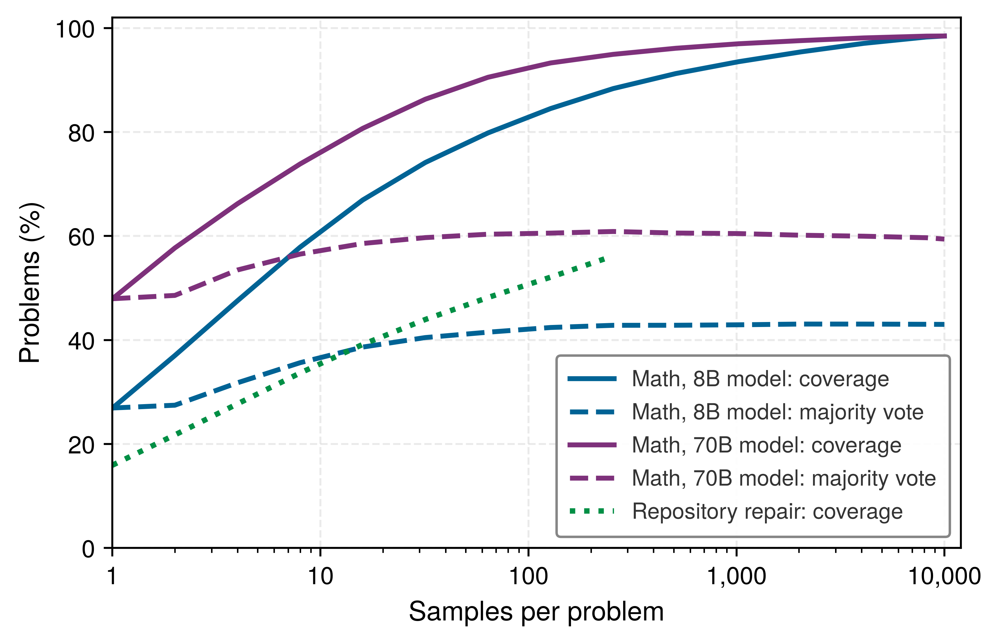
Содержание главы
Содержание
- 3 Вычисления во время инференса
- 3.1 Ограничения одиночного ответа
- 3.2 Три оси вычислений во время инференса
- 3.3 Выбор из пула кандидатов
- 3.4 Верификация кандидатов
- 3.5 Пересмотр планов кандидатов
- 3.6 Ограниченный поиск
- 3.7 Оценка политик обдумывания
- 3.8 Заблуждения и подводные камни
- 3.9 Итоги
- 3.10 Исторический контекст и дополнительная литература
- 3.11 Упражнения
3 Вычисления во время инференса
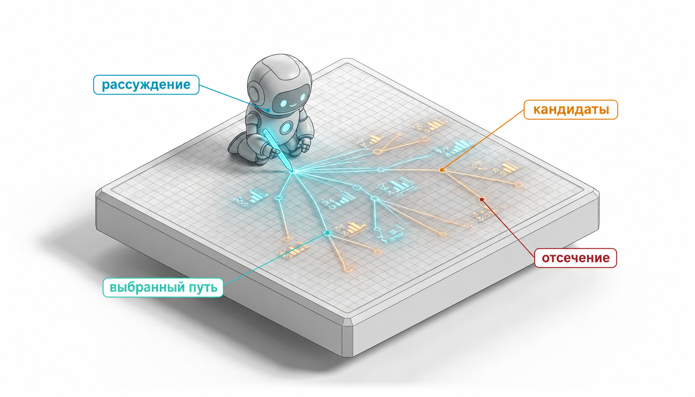
Назначение
Когда очередной токен, кандидат, проверка или вызов модели стоит своих затрат?
Агент, который размышляет перед действием, платит задержкой и деньгами за больший шанс успеха — тратит ли он их на более длинное рассуждение, дополнительные кандидаты, ещё одну проверку или ещё один вызов модели. Каждая из этих покупок отвечает на свой вопрос. Дополнительные токены заново рассматривают то, что уже содержится в промпте; дополнительные кандидаты повышают шанс, что хороший вариант найдётся где-то в пуле; и только выполненная проверка добавляет факт, которого у модели не было. Ни одна из них не делает возвращённый ответ правильным: селектор может вернуть правдоподобную неудачу, а поиск, оптимизирующийся против дефектной проверки, находит сам дефект быстрее, чем исправление. Поэтому рассуждение — это задача распределения бюджета с правилом остановки. Среда исполнения решает, куда направить следующую единицу работы, насколько можно доверять прошедшей проверке и когда остановиться, воздержаться или передать вопрос оператору вместо возврата лучшего непроверенного догадки. Каждая дополнительная итерация внутри одного решения удлиняет горизонт, поэтому такие траты должны быть ограничены ещё до того, как агент начнёт что-либо предпринимать.
Цели обучения
- Сравнить глубину, ширину и обратную связь как способы расходования бюджета на решение — по добавляемой информации, потребляемым токенам и критическому пути.
- Различать доступность кандидатов и качество выбранного результата при оценке голосования, обученного скоринга и предметных проверок.
- Рассчитать точность принятого набора по заданным уровням ошибок проверяющего и объяснить, как адаптивный поиск может изменить эти предположения.
- Представить план-кандидат в виде графа зависимостей и определить, какие его части требуют пересмотра после изменения наблюдения.
- Проанализировать, как пошаговые проверки и отсечение ограничивают рост дерева поиска и стоимость его скоринга.
- Спроектировать правила остановки, которые соблюдают ресурсные потолки, не считая исчерпание бюджета доказательством приемлемости.
- Сравнить конкурирующие политики рассуждения при общем бюджете и сроке — по вероятности прохождения, фактическим затратам и воздержаниям.
3.1 Ограничения одиночного ответа
Агент по ремонту (Четыре маяка — рабочие нагрузки) изучает реализацию пула соединений и получает готовый кандидат-патч. Контракт вызова допускает его как кандидата, однако патч опирается на неполный диагноз. Клиентские запросы периодически зависают даже после того, как простаивающие соединения освободились. Этот симптом могут давать два разных режима отказа: слишком агрессивный таймаут, обрывающий операцию раньше времени, или потерянное уведомление, когда рабочий поток возвращает соединение в пул. По запросу языковая модель предлагает увеличить таймаут. Это изменение выглядит правдоподобным обходным путём, но не даёт никаких доказательств того, что именно таймаут вызвал зависания. Немедленное развёртывание такого патча рискует замаскировать хвост задержки, оставив дефект конкурентности нетронутым.
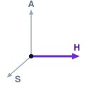
Рассуждение расширяет горизонт дополнительными итерациями модели и проверками внутри одного решения, а жёсткие потолки ограничивают эти траты.
Прежде чем принимать правку, среда исполнения агента может потратить дополнительную работу тремя разными способами. Она может дать модели увеличенный лимит вывода, чтобы проследить, как потоки шаг за шагом захватывают и освобождают блокировку. Она может сэмплировать несколько кандидатов-патчей, изменяющих разные части логики пула. Она также может запустить целевой тестовый каркас, чтобы зафиксировать, получает ли ожидающий поток уведомление по условной переменной на самом деле. Каждый вариант покупает свой тип доказательств. Расширенное рассуждение может вскрыть логические ошибки в исходном тексте. Сэмплирование по температуре или вариациям промпта может выявить исправления, которые пропускает жадный одиночный проход. Инструментированный тест, напротив, наблюдает состояние исполняющегося процесса напрямую и раскрывает динамические взаимодействия потоков, которые одна лишь генерация токенов установить не может.
Это разделение отмечает границу между вычислениями модели и наблюдением со стороны среды исполнения. Дополнительные вычисления модели заново оценивают информацию, уже присутствующую в промпте. В рамках одной генерации модель может откатиться назад и исправить прежнюю аналитическую ошибку, даже если предыдущие токены остаются застывшими в её префиксе. Однако чистые вычисления не могут создать новых эмпирических фактов. Только выполненный тест сообщает, как ведёт себя работающий процесс, и его выводы верны лишь для условий и расписаний потоков, которые проверил тестовый каркас.
Предположим, целевой тест навязывает чередование, при котором один рабочий поток ожидает, пока другой возвращает соединение. Трасса показывает, что соединение попадает в пул, но ожидающий поток остаётся заблокированным и после момента уведомления. Это наблюдение сразу опровергает гипотезу о таймауте и указывает агенту на путь сигнализации. Тогда агент может написать патч, исправляющий логику уведомлений, и проверить его на отказавшем воспроизводителе. Прохождение целевого воспроизводителя всё ещё не означает полного принятия задачи: узкие тесты могут пропустить граничные случаи, и ни непроверенная гипотеза, ни изолированный микро-тест не достаточны для отправки кода в продакшен. Тем не менее два пути расходятся ещё до какого-либо изменения файлов (Рисунок 1). Действие по первому предположению скрывает симптом и сохраняет дефект, тогда как проверка вначале тратит один короткий тест, чтобы выяснить, какая гипотеза устоит.
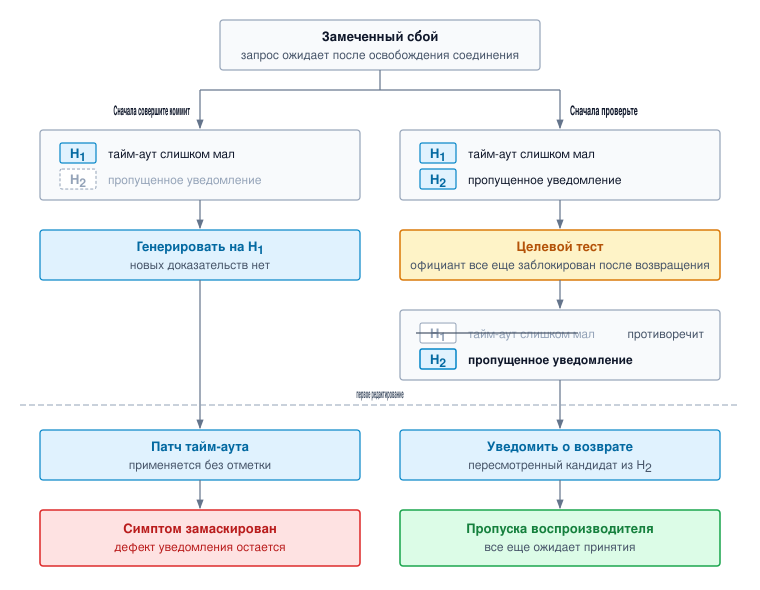
Инженерный расчёт 3.1: Проба против более длинного ответа
Задача: Подготовленный диагностический тест занимает 40 ms. Предлагаемое объяснение содержит 1,024 выходных токенов. Сколько времени занимает генерация объяснения по сравнению с тестом?
Переменные: Иллюстративное время генерации на токен из Оценка аппаратной работы на вызов составляет 21.07 ms и выведено из ограничений пропускной способности памяти, а не из измеренной производительности реального сервиса. Гипотетическая цена вывода составляет $15 за миллион токенов. Обработка промпта, ожидание в очереди, транспорт, подготовка теста и последующий вызов модели, читающий наблюдение теста, исключены.
Математика: Генерация 1,024 токенов по 21.07 ms за токен требует 21.58 s и влечёт $0.01536 платы за токены. Деление этой задержки генерации на 40 ms выполнения теста даёт множитель 539.5×.
Системный вывод: Когда нерешённый вопрос касается динамического поведения программы, проба решает его в 539.5× быстрее, чем модель способна сгенерировать спекулятивное объяснение, и только ответ пробы является наблюдением. Запуск теста предпочтителен всякий раз, когда его подготовка и выполнение остаются ниже 21.58 s объяснения, а его результат чисто разделяет конкурирующие режимы отказа. Напротив, неубедительный тест, не разделяющий гипотезы, не даёт диагностического выигрыша независимо от своей скорости. Невоспроизведение всё же может служить отрицательным доказательством, когда известна чувствительность теста к подозреваемой неисправности. Разумная среда исполнения тратит работу на ту операцию, которая дешевле всего устраняет главный источник неопределённости.
Проба и решение пересмотреть патч на основании её доказательств оба произошли вне какого-либо одиночного вызова модели. Контракт вызова из предыдущей главы заканчивается одним промптом и одним кандидатом, сопровождаемыми лишь метаданными о том, достигла ли генерация стоп-токена или лимита вывода. Такой интерфейс не может решить, лучше ли потратить следующую секунду задержки или долю цента на более длинное рассуждение, дополнительные сэмплы кандидатов или пробу в среде исполнения. Ответ API с пометкой «завершено» подтверждает лишь, что генерация закончилась, но не то, что предложенный патч исправляет баг. Вычисления во время инференса — это вся системная работа, которую среда исполнения организует вокруг вызова модели, при фиксированных весах модели, чтобы сгенерировать, протестировать и отобрать кандидатов до принятия действия. Управление этими тратами требует политики среды исполнения, устанавливающей жёсткие потолки задержки и стоимости, распределяющей работу между рассуждением и проверками и завершающейся корректно, не принимая исчерпанный бюджет за проверенное решение.
↩︎ Ограниченная модель контракта одиночного вызова установлена в Контракт вызова.
Каждая часть такой политики порождает следующий вопрос. Сначала среда исполнения выбирает, как распределить дополнительную работу между глубиной рассуждения, шириной кандидатов и эмпирической обратной связью (Глава 3.2). Ширина порождает пул, поэтому среде исполнения затем нужно выбрать из него, не обманувшись правдоподобной неудачей (Глава 3.3), а удачный выбор зависит от того, насколько можно доверять прошедшей проверке (Глава 3.4). Когда проверка опровергает одну из посылок посреди плана, среда исполнения должна перегенерировать только то, что от неё зависело (Глава 3.5). Кандидаты и пересмотры вместе образуют поиск, чьи траты нужно отслеживать, резервировать и останавливать (Глава 3.6), и наконец полная политика сравнивается с альтернативами при одном бюджете и одном сроке (Глава 3.7).
3.2 Три оси вычислений во время инференса
Выдача агенту по ремонту лимита в четыре тысячи токенов не определяет его задержку, занимаемый объём памяти или диагностический охват, потому что среда исполнения может потратить те же четыре тысячи токенов на одно длинное рассуждение, четыре параллельных кандидата-патча или три раунда «правка–тест–пересмотр». Хотя все три варианта могут потреблять одинаковое число выходных токенов, они нагружают систему обслуживания по-разному. Длинное рассуждение генерирует токены один за другим вдоль единой каузальной цепи. Независимые кандидаты-патчи могут выполняться параллельно на аппаратуре ускорителей. Цикл «правка–тест–пересмотр» обязан приостанавливать генерацию модели, пока выполняется каждый диагностический тест. Эти зависимости определяют, какие операции лежат на критическом пути задержки и сколько состояния среда исполнения должна удерживать в памяти.
Глубина удлиняет последовательные вычисления внутри одного кандидата, ширина исследует несколько путей-кандидатов параллельно, а обратная связь вплетает наблюдения из среды в последующие пересмотры. Развёртка рассуждения во время инференса — это один ограниченный путь генерации кандидата, потенциально чередующий проверки верификации и пересмотры по наблюдениям; термин пришёл из игрового поиска, где rollout проигрывает одну линию ходов вперёд до конца. Глубина удлиняет развёртку, ширина запускает несколько параллельно, а обратная связь вставляет проверки между ходами развёртки. Политика распределения может сочетать все три: например, сгенерировать несколько кандидатов-патчей параллельно, прогнать для каждого регрессионные тесты и потратить более глубокое пошаговое рассуждение только на самого перспективного выжившего. На протяжении главы веса модели остаются замороженными, а каждая ось расходует один и тот же бюджет вычислений во время инференса.
Определение 3.1: Бюджет вычислений во время инференса
Бюджет вычислений во время инференса — это разрешение на одно решение: количество обработанных токенов промпта, сгенерированных токенов, вызовов модели, проверок верификации и истекшего физического времени, которое среда исполнения может израсходовать — при фиксированных весах модели — прежде чем она обязана выбрать кандидата, воздержаться или передать задачу оператору-человеку.
- Значимость: Бюджет задаёт стоимость попытки в эффективной стоимости на принятую задачу,
(Уравнение (2)). Дополнительное рассуждение снижает стоимость на принятую задачу, когда оно увеличивает вероятность принятия пропорционально быстрее, чем растут ожидаемые затраты на попытку. Более высокая стоимость на принятую задачу всё же может быть оправдана, если она обеспечивает требуемую вероятность принятия в пределах срока (Глава 3.7.3). - Различие: Вычисления обучения амортизируют оптимизацию весов один раз на все будущие задачи. Вычисления во время инференса повторяются при каждом решении, где внутреннее разрешение на рассуждение — лишь одна поверхность управления наряду с внешними вызовами инструментов и проверками верификации.
- Типичная ошибка: Считать максимальный потолок распределения ожидаемыми тратами или считать исчерпанный бюджет доказательством того, что лучший оставшийся кандидат приемлем.
Три оси различаются своей структурой зависимостей (Рисунок 2). Глубина удлиняет одного кандидата многошаговым рассуждением, ширина расходится в сэмплированные кандидаты, сходящиеся к селектору, а обратная связь пропускает кандидата через изолированную проверку (песочницу), чьё наблюдение определяет пересмотр.
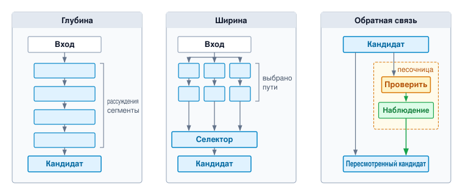
3.2.1 Удлинение рассуждения по оси глубины
Требование, чтобы модель сразу перепрыгнула от отчёта об ошибке к патчу, часто пропускает многошаговые взаимодействия с блокировками, но если позволить ей рассуждать тысячи токенов, каждый шаг оказывается на критическом пути задержки, и лимит вывода может быть исчерпан ещё до того, как будет сгенерирован хоть какой-то код. Удлинение вызова по оси глубины позволяет авторегрессионной модели развернуть промежуточные токены рассуждения перед выдачей итогового решения или артефакта, обобщая ранние техники scratchpad и промптинга с цепочкой рассуждений (Nye и др. 2021 г.; Wei и др. 2022 г.). В сценарии с пулом соединений эти промежуточные токены могут пошагово отслеживать чередование потоков: захват мьютекса пула, проверку утечек сокетных дескрипторов и сигнализацию условных переменных ожидающих потоков. Поскольку авторегрессионная генерация обусловлена всеми предшествующими токенами, последующие шаги декодирования могут обращаться к более ранним выкладкам, замечать ошибочные допущения и менять курс до выдачи кода. Этот выигрыш достигается целиком за счёт дополнительных проходов forward по растущему контексту, а не за счёт изменения весов сети.
Однако на уровне оборудования удлинение единого пути генерации сериализует работу. Поскольку декодирование трансформера при малых размерах батча ограничено пропускной способностью памяти, задержка шага определяется временем, необходимым для перегонки всех параметров модели из высокоскоростной памяти в кэши процессора (принцип «Задержка, ограниченная выводом»). Поэтому астрономическое время генерации растёт при фиксированной конфигурации обслуживания примерно линейно с числом сгенерированных токенов. Длинная трасса рассуждения показывает лишь, что ускоритель выполнил больше работы, но не то, что итоговый код компилируется или выполняется корректно. Среда исполнения должна также оставить достаточно выходного бюджета для финального патча: вывод, который обрывается на лимите токенов посреди рассуждения, возвращает усечённый ответ, и контракт вызова помещает его в карантин как любой другой неполный вызов, не допуская его как кандидата.
3.2.2 Параллельная выборка по оси широты
Генерация единственного завершения фиксирует исправление на той гипотезе, которой favored первые токены модели, и если исходная постановка неверна, дополнительная глубина лишь разворачивает ошибочную посылку. Выборка по оси широты страхует от такой фиксации, запрашивая несколько вариантов патчей из одного и того же фрагмента исходного кода и спецификации задачи с помощью стохастических управляющих параметров декодирования. При фиксированном промпте и независимых случайных зернах эти выборки статистически независимы как извлечения из выходного распределения модели. Тем не менее они ограничены тем, что знает модель: если модель приписывает пренебрежимо малую вероятность корректному шаблону уведомления потоков, каждый независимый образец может повторять одно и то же пропущенное вещание. Независимые выборки могут одинаково ошибаться.
↩︎ Temperature, top-
Поскольку параллельные кандидаты не зависят друг от друга, широта открывает мелкозернистый параллелизм при умеренной цене в задержке. При декодировании, ограниченном пропускной способностью памяти (принцип «Задержка, ограниченная выводом»), батч из
Именно в памяти ускорителя широта берёт свою цену. Каждый активный поток генерации должен поддерживать собственный KV-кэш для генерируемых им токенов. Когда система обслуживания разделяет префиксы между потоками, промпт из
Без кэширования разделяемых префиксов движок обслуживания хранит
↪ Разделение блоков, при котором KV-состояние общего промпта хранится один раз для каждого ветвящегося от него кандидата, рассмотрено в Совместное использование префиксов с copy-on-write.
Широта также переносит нагрузку вниз по конвейеру: широкая пул кандидатов окупается лишь тогда, когда среда исполнения способна определить, какой кандидат лучше. Пул, содержащий рабочий патч, бесполезен, если селектор не может его опознать. В исследовании повторной выборки Brown и др. (2024 г.) показал, что вероятность того, что хотя бы один кандидат корректен (pass@
3.2.3 Исправление по наблюдениям вдоль оси обратной связи
Ни более длинная цепочка рассуждений, ни более широкий пул выборок не сообщают модели, получит ли ожидающий поток сигнал условной переменной во время выполнения. Ось обратной связи восполняет недостающие свидетельства, выполняя проверку над кандидатом и подавая полученное наблюдение в следующий запрос к модели. Вместо того чтобы полагаться только на застывшие веса и статичный промпт, агент исправления предлагает вариант патча, среда исполнения запускает ограниченный набор тестов, а следующий вызов модели получает конкретную диагностику, например трассировку стека из заблокированного рабочего потока. Такие наблюдения времени выполнения сужают следующего кандидата гораздо сильнее, чем просьба к модели самостоятельно перечитать исходный промпт (Shinn и др. 2023 г.).
Проверки верификации возвращают структурированные исходы: ошибка, успех или неубедительное выполнение (например, таймаут теста). Трасса ошибки указывает на сломанные проверки или регрессии; успешный тест подтверждает, что код удовлетворяет проверяемым условиям в протестированных сценариях; финальное принятие остаётся отдельным шлюзом политики. Запуск диагностики — сам по себе внешнее действие, потребляющее процессор и память, выполняемое внутри песочницы и добавляющее астрономическую задержку, даже если применяется только внутри рассуждения.
Каждый раунд обратной связи — это ещё один виток горизонта
Обратная связь требует строгой сериализации: следующее исправление не может начаться, пока текущая проверка не завершится и не вернёт своё наблюдение. Политики контекста, добавляющие каждый предшествующий кандидат и диагностический отчёт, также заставляют входной промпт расти от витка к витку. При начальной длине промпта
Это тот самый рост «только дополнение», который Уравнение (9) расценивал на протяжении всей траектории, теперь ограниченный одним решением; он повышает задержку префилла промпта, использование памяти ускорителя и тарификацию токенов на каждом раунде. Методы сжатия контекста могут суммировать более ранние попытки или отбрасывать устаревшие диагностические трассы, но политика распределения должна закладывать бюджет на полный объём токенов, реально отправляемых в API модели.
↪ Методы сжатия контекста и их планирование в рамках бюджета запроса рассмотрены в Сжатие контекста.
3.2.4 Три оси под единым выходным потолком
Ограничение сгенерированных токенов одним числом не ограничивает астрономическую задержку, память ускорителя или тарификацию входных токенов, потому что глубина, широта и обратная связь превращают один и тот же выходной потолок в разные нагрузки на ресурсы. Поэтому среды исполнения отслеживают по трём осям четыре величины: количество входных и выходных токенов, астрономическую задержку критического пути, пиковое удерживаемое состояние ускорителя и объём полученной внешней информации. Пусть
Критический путь для широты предполагает, что обслуживающий кластер располагает достаточной памятью и вычислительной ёмкостью, чтобы декодировать все
| Ось | Обработанные токены | Критический путь | Пиковое удерживаемое состояние модели | Новая информация |
|---|---|---|---|---|
| Глубина | Одна зависимая последовательность | Один контекст из |
Ничего сверх запроса и весов | |
| Широта | Самый длинный кандидат, при наличии ёмкости | Вариация выборки по одному запросу | ||
| Обратная связь | Сумма витков, включая каждую проверку | Один активный контекст из |
Наблюдения из выполненных проверок |
Из трёх осей только обратная связь привносит внешнюю информацию, отсутствующую в весах модели и промпте. Приведённый ниже расчёт оценивает эти выражения для исправления пула соединений при фиксированном выходном потолке в 4 096 токенов, показывая, как равные выходные потолки дают разные задержки и счёта за токены.
Инженерный расчёт 3.2: Одно решение, три распределения
Задача: Запрос на исправление начинается с 4,096 входных токенов и общего потолка в 4,096 сгенерированных токенов. Как глубина, широта и обратная связь расходуют этот лимит?
Таблица 2: Учёт распределений при общем выходном потолке: Равные потолки дают неравный расход. Лимиты не включают префилл, очереди, отбор и плату за инструменты.
Переменные: Используем иллюстративное время генерации на токен из предыдущего примера. Широта располагает ёмкостью на 4 одновременных потоков при той же скорости. Каждый короткий кандидат использует 1,024 сгенерированных токенов. Обратная связь использует 3 витков, за каждым из которых следует проверка длительностью 1.5 s, возвращающая 340 токенов. Последующие запросы обратной связи добавляют предшествующих кандидатов и отчёты. Гипотетические цены — $3 за миллион входных токенов и $15 за миллион выходных токенов, без скидок за кэш, поэтому каждый поток широты тарифицируется за собственную копию промпта (в отличие от строки разделяемых префиксов в Таблица 1). Времена генерации не включают префилл, очереди и транспорт; время обратной связи дополнительно включает свои проверки. Счёт учитывает только токены модели, а Таблица 2 сводит токены, время и счёт каждого распределения рядом.
| Распределение | Входные токены | Выходные токены | Генерация и включённые проверки | Счёт за токены модели |
|---|---|---|---|---|
| Глубина | 4,096 | 4,096 | 86.32 s | $0.07373 |
| Широта | 16,384 | 4,096 | 21.58 s | $0.11059 |
| Обратная связь | 16,380 | 3,072 | 69.24 s | $0.09522 |
Математика: в Таблица 2 глубина порождает все 4,096 токенов вдоль одного пути. Широта порождает 1,024 токенов на каждом из 4 параллельных путей, сокращая критический путь в 4×. Однако чтение промпта 4 раз по не разделяемым потокам добавляет 12,288 входных токенов, увеличивая стоимость биллинга до 1.5× от глубины. Обратная связь накапливает входной контекст за
Системный вывод: широта обменивает деньги на меньшую астрономическую задержку, и вся её биллинговая надбавка происходит от повторно читаемых промпт-токенов объёмом
3.2.5 Внутренние бюджеты и внешняя оркестрация
Когда модельный сервис скрывает свои промежуточные токены рассуждения за API, среда исполнения, оценивающая усилие по длине видимого ответа, занижает и расход токенов, и задержку. Поэтому производственные системы разделяют две поверхности управления: внутреннее рассуждение модели и внешнюю оркестрацию рабочего процесса. Модельный сервис может предоставлять внутренний бюджет, ограничивающий, сколько промежуточных токенов может потратить один вызов, тогда как среда исполнения независимо управляет тем, сколько вызовов отправить, какие проверки инструментов запустить и какой контекст передать в последующие запросы. Внутренние бюджеты регулируют глубину внутри одного вызова; внешняя оркестрация управляет широтой по ветвям, планирует проверки в песочнице и собирает пересмотренные промпты. Поскольку сервис может изъять промежуточные токены из возвращаемого текста, среда исполнения должна читать явные заголовки расхода токенов и коды статуса завершения, а не количество символов, чтобы соблюдать квоты и отслеживать расходы.
3.2.6 Как рассуждающие модели расходуют выходные лимиты
Этот внутренний бюджет управляет рассуждающими моделями, которые иначе могут израсходовать весь выходной лимит на промежуточные шаги и вернуть пустой или обрезанный итоговый ответ. Обученные с помощью обучения с подкреплением на задачах с объективно проверяемыми результатами — формальной математикой, логическими головоломками и кодовыми базами с юнит-тестами — такие модели учатся генерировать протяжённые промежуточные «черновики», которые предлагают решения, проверяют шаги и откатываются назад внутри одного вызова (OpenAI 2024 г.; DeepSeek-AI и др. 2025 г.). На уровне обслуживания эти промежуточные токены рассуждения — обычные авторегрессионные выходные токены, которые расходуют вычисления ускорителя, заполняют KV-кэш и влекут полную оплату выходных токенов. Поскольку черновик расходует выходной лимит вызова, сервисы предоставляют параметр бюджета рассуждения, который превращает последовательную глубину из фиксированной привычки модели в настраиваемый на уровне запроса регулятор среды исполнения. Оркестратор может настраивать этот регулятор по задаче, однако внутреннее рассуждение по-прежнему работает строго над предоставленным промптом и статическими весами. Протяжённый черновик может проверить арифметику или проследить логику по промпту, но он не может наблюдать поведение во время исполнения или определить, устраняет ли предложенный патч утечку соединения, не запустив набор тестов.
↪ Обучение с подкреплением на задачах с проверяемыми результатами — то обучение, которое порождает рассуждающие модели, — развивается в Обучение с подкреплением на основе верифицируемых наград.
Поскольку модели, обученные с проверяемыми вознаграждениями, расходуют выходные лимиты иначе, чем модели, дообученные на инструкциях (модели, адаптированные следовать примерам инструкций и ответов), потолки токенов нужно калибровать по каждому семейству моделей, а телеметрия вызовов направляет политику оркестрации, не гарантируя, что завершившийся кандидат корректен. Трактовка глубины как покального регулятора наряду с внешней широтой и обратной связью всё же позволяет среде исполнения варьировать расходы между задачами, поднимая практический вопрос о том, какая ось распределения окупается на каждом уровне сложности задачи.
Пример 3.1: Вычислительно-оптимальное распределение вычислений во время инференса
Сценарий: Snell и др. (2024 г.) оценивали стратегии расходования фиксированного бюджета вычислений во время инференса на бенчмарках рассуждения, сравнивая последовательное исправление одного кандидата с параллельной широтой сэмплирования и поиском под управлением обученных верификаторов процесса (Глава 3.4). Исследование группировало задачи бенчмарка по уровням сложности согласно доле однократных успехов базовой модели.
Диагноз: на более лёгких задачах наиболее эффективно бюджет использовало последовательное исправление, устраняя мелкие ошибки без накладных расходов параллельного сэмплирования. На умеренно сложных задачах более высокую точность достигали гибридные стратегии, сочетающие параллельное исследование с поиском под управлением верификаторов. На самых сложных задачах масштабирование вычислений во время инференса давало убывающую отдачу по всем осям. При равных суммарных FLOPs удачно выбранное распределение позволяло меньшей модели превзойти модель в 14 раз большую, всякий раз когда у меньшей модели была ненулевая базовая доля успехов. Когда базовая доля успехов была близка к нулю, расход FLOPs на большую базовую модель выигрывал у исчерпания токенов на параллельные прогоны.
Системный урок: при фиксированном предоставленном промпте дополнительное рассуждение и сэмплирование могут выявить возможности, которыми модель уже обладает, но не могут восполнить недостающие факты во время исполнения. Обратная связь может принести новые наблюдения в следующий вызов, хотя их ценность по-прежнему зависит от покрытия проверки и способности модели ими воспользоваться. Средам исполнения следует маршрутизировать бюджеты по оцененной сложности: тратить небольшой бюджет или один вызов на простые задачи, использовать параллельный поиск и обратную связь на умеренно сложных и эскалировать запросы с почти нулевой отдачей на более сильную модель или к оператору-человеку вместо сжигания токенов на неуправляемое сэмплирование.
Поскольку среда исполнения не знает истинной сложности задачи заранее, она оценивает сложность дешёвыми и быстрыми сигналами, прежде чем выделить большой бюджет на рассуждение. Распространённые сигналы включают согласованность двух-трёх коротких пилотных сэмплов, быстрые статические линтеры и исторические частоты отказов на похожих запросах. Когда пилотные сэмплы согласуются и проходят статические проверки, среда исполнения удерживает бюджет малым и завершается одним вызовом. Когда пилотные сэмплы расходятся или линтеры указывают на ошибки, планировщик эскалирует к более широкому сэмплированию или циклу «правка–тест–исправление», а если потолок бюджета достигнут без верифицированного кандидата, процесс останавливается и эскалируется к оператору-человеку. Каждый сигнал маршрутизации действует как классификатор, чьи точность и полноту следует измерять на отложенных задачах.
На практике внутренняя глубина и внешняя широта работают вместе. Каждый прогон может использовать достаточно глубины, чтобы составить связный патч кода, в то время как среда исполнения сэмплирует несколько таких патчей параллельно и фильтрует их через тестовый каркас. Тем не менее смесь должна соответствовать узким местам системы: медленные тесты растягивают критический путь обратной связи, а слабые тесты обесценивают каждое наблюдение. Те же проверки важны и во время обучения, поскольку обучение с подкреплением с проверяемыми вознаграждениями использует их как учебное вознаграждение. Любое слепое пятно или ложное прохождение, вызывающее плохой выбор во время инференса, становится лазейкой, которую обучение активно оптимизирует при каждом обновлении весов.
↪ Как проверка приёмки становится учебным вознаграждением и как её пробелы эксплуатируются при обучении, развивается в Верифицируемые награды.
Контрольная точка 3.1: Выбор распределения
Выбор того, как расходовать вычисления между глубиной, широтой и обратной связью, определяет, какие кандидаты попадут в пул, но порождение хорошего кандидата не помогает, если селектор выберет правдоподобно выглядящий сломанный вместо исправного. Следующий шаг — выбор среди кандидатов без того, чтобы тратить на выбор больше, чем стоит сам пул.
3.3 Выбор из пула кандидатов
Сэмплирование восьми патчей-кандидатов для пула соединений ничего не даёт, если семь из них повторяют один и тот же сломанный обходной путь с таймаутом, а селектор выбирает один из семи вместо единственного патча, исправляющего ошибку с уведомлением. В типичном пуле один кандидат может удлинить таймаут захвата, другой — добавить экспоненциальные повторы, а третий — изменить способ пробуждения ожидающих потоков на пути возврата соединения. Среда исполнения должна решить, какое предложение, если вообще какое-либо, имеет достаточно подтверждающих свидетельств, чтобы вернуть его, а сбор этих свидетельств расходует время и токены из того же бюджета рассуждения, который породил пул.
Два вопроса отделяют порождение от выбора: содержит ли пул хотя бы одного кандидата, решающего задачу, и может ли селектор выбрать этого кандидата, не приняв сломанный. Генератор может завалить пул предложениями, ничуть не облегчая выбор; наоборот, более строгий селектор может поднять сквозную надёжность, не сэмплируя ни одного дополнительного кандидата.
3.3.1 Полезная вариативность среди кандидатов
Переименование локальных переменных, переформатирование комментариев или переписывание цикла может породить восемь различных последовательностей токенов, которые все оставляют ошибку синхронизации нетронутой. Поверхностная вариативность последовательностей токенов не гарантирует разнообразия гипотез ремонта. В ремонте пула соединений кандидаты добавляют ценность лишь тогда, когда проверяют различные объяснения, которые последующие проверки могут различить. Изменение пути уведомления потоков против удлинения таймаута проверяет две различные гипотезы. Порождение полудюжины слегка переформулированных версий одного и того же увеличения таймаута лишь впустую расходует прогоны верификации.
Эта проблема отделена от статистической зависимости. Когда задача, промпт, базовая модель и параметры сэмплирования фиксированы, отдельные извлечения с независимыми случайными зерно-источниками действительно независимы и одинаково распределены (IID). И всё же, если модель кладёт почти всю свою вероятностную массу на правки таймаута, независимые извлечения всё равно заполнят пул вариациями одной и той же ошибки.
В смешанной производственной нагрузке общие слепые пятна модели значат ещё больше. Модель часто надёжно решает знакомые шаблоны и каждый раз терпит неудачу на незнакомом краевом случае, поэтому повторные сэмплы на трудной задаче отказывают вместе гораздо чаще, чем это следовало бы из средней доли успехов по всем задачам. Хотя сэмплы на одной фиксированной задаче могут быть условно независимыми, трактовка попыток в смешанной нагрузке как извлечений с одной общей вероятностью успеха скрывает эту кластеризацию. Исправление на основе обратной связи снова меняет распределение: как только среда исполнения подаёт тестовые ошибки в последующие промпты, каждый новый кандидат напрямую зависит от того, что нашли предыдущие проверки.
Среда исполнения может поощрять более широкое исследование, повышая температуру сэмплирования или побуждая модель пробовать различные диагностические углы при тех же ограничениях задачи. Однако чрезмерное насаждение разнообразия часто порождает синтаксические ошибки, нарушенные инварианты или бессмысленные правки. Метод диверсификации оправдывает себя, только если он повышает долю успехов задачи в пределах фиксированного бюджета вычислений и задержки.
Чтобы не тратить прогоны тестов на почти дубликаты, среда исполнения может рано отсекать избыточных кандидатов, дедуплицируя по структуре и поведению. Нормализация абстрактного синтаксического дерева (AST) снимает поверхностные изменения вроде имён переменных и пробелов, а поведенческая кластеризация запускает кандидатов на дешёвых входах, чтобы сгруппировать тех с идентичными выходами. Совместное применение обоих шагов позволило конкурентной системе генерации кода сузить десятки тысяч сырых модельных сэмплов до горстки различных отправок (Li и др. 2022 г.). Каждый метод группирует кандидатов по ограниченному отношению эквивалентности — будь то нормализованный синтаксис или совпадающие выходы на пробном наборе, — и дедупликация корректна всякий раз, когда это отношение сохраняет свойство, проверяемое последующей проверкой.
3.3.2 Выбор правила выбора
Выбор самого частого патча голосованием большинством терпит неудачу всякий раз, когда любимая ошибка модели численно превосходит единственного кандидата, исправляющего ошибку, тогда как прогон полного набора тестов на каждом сыром сэмпле впустую тратит время песочницы на патчи, которые даже не парсятся. Поэтому среды исполнения комбинируют три вида сигналов выбора, упорядоченных по стоимости и по силе утверждения, которое каждый из них поддерживает: прямые проверки исполнения, согласованность ответов (консенсусное голосование) и обученное ранжирование.
Прямые проверки, такие как парсер, проверка типов или тестовый каркас, детерминированно проверяют кандидата против явных правил. Каждая устанавливает только то свойство, которое проверяет, как показал конвейер скоупед-проверок из Разбиение проверок по стоимости и охвату, поэтому чистая компиляция ничего не говорит о том, устранено ли состояние гонки. Запуск кода кандидата — это также внешнее действие, требующее изоляции в песочнице, жёстких таймаутов и строгих границ полномочий.
Согласованность ответов комбинирует независимые пути рассуждения голосованием. В самосогласованности среда исполнения сэмплирует несколько цепочек рассуждения, нормализует их итоговые ответы и берёт голосование относительного большинства (Wang и др. 2023 г.). Это хорошо работает для арифметики, символической логики или коротких фактических ответов, но голосование большинством отражает лишь то, что генератор порождает чаще всего. Когда модель обладает систематическим смещением или использует порочный обходной путь, независимые сэмплы регулярно сходятся на одном и том же неверном ответе. Для ремонта кода голосование по сырым патчам — плохой селектор: поведенческая согласованность наследует ограничения покрытия пробных входов, и патч из меньшинства, который действительно проходит воспроизводитель, должен побеждать популярный патч, который её не проходит.
Когда детерминированные проверки не могут покрыть все требования, обученные ранжировщики и модельные судьи предоставляют эвристическое упорядочение. Обученная модель вознаграждения или вторичная большая языковая модель (LLM) — судья (модель, которой предложено оценивать вывод другой модели) может оценивать ясность объяснений, проверять руководства по стилю или ранжировать патчи до того, как среда исполнения потратит время на тяжёлые интеграционные тесты. Тем не менее ранжирование и приёмка отвечают на разные вопросы. Ранжирование упорядочивает кандидатов от лучшего к худшему по некоторой оценке; приёмка решает, удовлетворяет ли кандидат контракту задачи. Если все кандидаты в пуле сломаны, выбор кандидата с наивысшим рангом возвращает самую красивую неудачу. Возврат кандидата вместо воздержания требует верификатора, дающего объективный результат «прошло/не прошло».
Определение 3.2: Выбор под управлением верификатора
Выбор под управлением верификатора — это политика выбора, которая возвращает кандидата только когда его пропускает верификатор — проверка, чьи критерии и наблюдения кандидат не может изменить, — и воздерживается, когда ни один кандидат не проходит.
- Значимость: её доля успехов ограничена pass@
— вероятностью того, что пул содержит проходящего кандидата (Глава 3.3.3), — тогда как доля корректных среди сделанных выборов зависит и от точности проходящего множества верификатора, и от политики выбора (Глава 3.4.2). Разработанная там фиксированная IID-политика первого проходящего сохраняет точность проходящего множества; ранжирование среди проходящих кандидатов — не обязательно. Покрытие выбора и корректность выбранных вместе определяют вероятность возврата валидного результата. - Отличие: голосование выбирает то, что генератор порождает чаще всего, а обученное ранжирование — то, что предпочитает скорер; только вердикт верификатора может оправдать возврат кандидата вместо воздержания.
- Типичная ловушка: считать пропуск верификатора приёмкой задачи; вердикт покрывает проверенное свойство, и его частота ложной приёмки растёт в значимости по мере падения доли валидных кандидатов в пуле.
Гипотетический пул кандидатов на ремонт в Таблица 3 показывает, что может и чего не может установить каждый этап проверки. Здесь сфокусированный воспроизводитель упражняет известную гонку, а полные регрессионные наборы ещё не запускались.
| Candidate | Proposed repair | Observed check result | Supported conclusion |
|---|---|---|---|
| A | Increase the timeout | Compiles; known failure remains | Structural validity is insufficient |
| B | Retry after the timeout | Compiles; known failure remains | Different code can preserve the same defect |
| C | Change notification handling with malformed syntax | Parsing fails | This artifact cannot proceed to execution testing |
| D | Change notification handling with valid syntax | Compiles; reproducer passes | Promising repair, with untested behavior still unresolved |
Промышленная среда исполнения выстраивает эти проверки по возрастанию стоимости, следуя упорядоченному по цене каскаду из Таблица 3, так что разбор и проверки AST отбрасывают некорректных кандидатов до того, как они попадут в тесты в песочнице или к судье-LLM. Внутри поиска порядок этапов должен определяться измеренным временем выполнения и долей отказов, а не догадками. Запуск скомпилированного бинарника в тёплом контейнере может занять 5 ms, тогда как вызов крупного судьи-LLM для оценки качества кода — это полный вызов модели, который может занять 800 ms и съесть часть токенного бюджета. Сравнение нескольких кандидатов в одном промпте также масштабируется иначе с ростом длины контекста, чем оценка каждого кандидата по отдельности. Поскольку проверка напрямую конкурирует с генерацией за время и токены, её нужно бюджетировать как часть вычислений во время инференса.
3.3.3 Доступность кандидатов при pass@
Когда среда исполнения не возвращает рабочий патч из пула из
Для фиксированной задачи и фиксированной политики генерации предположим, что независимые сэмплы проходят тесты с вероятностью
Это выражение условно для данной задачи и политики сэмплирования. Чтобы суммировать рабочую нагрузку с разными вероятностями прохождения на уровне задач, усредняйте величины на уровне задач; подстановка среднего по рабочей нагрузке
В бенчмарке генерируется
где числитель принимается равным нулю при
Связь с развёрнутым выбором следует из измеряемого события. Если селектор обязан вернуть неизменённого члена того же пула, он не может вернуть проходящего тесты кандидата, когда пул таких не содержит. Поэтому его вероятность вернуть проходящего кандидата не превышает pass@
Предикат в pass@
При 10,000 сэмплах пулы меньшей модели содержат правильный ответ для 98 percent задач, однако мажоритарное голосование возвращает его для 43 percent, а для большей модели — для 59 percent. После 256 сэмплов голосование даёт менее одного процентного пункта, тогда как покрытие прибавляет ещё 10. Покрытие агента по ремонту растёт с 16 percent при одном сэмпле до 56 percent при 250, но этим ростом можно воспользоваться только потому, что тесты могут определить, какой кандидат проходит. Значит, траты на широту оправданы селектором, а не пулом. Без проверки, распознающей корректного кандидата, дополнительные сэмплы поднимают потолок pass@
↪ Различие между pass@
Каждое удвоение возводит в квадрат вероятность того, что все кандидаты провалятся, поэтому полосы приближаются к достоверности.
У широты есть цена, которую pass@
Инженерный расчёт 3.3: Цена большего пула
Постановка: Каждый кандидат на ремонт проходит верификатор задачи с вероятностью
Переменные:
Математика: Формула pass@
Системный вывод: При равном успехе параллельный пул стоит 2.5× дороже на принятый ремонт; покупает же он один раунд вместо ожидаемых 3.14 последовательных раундов «сгенерировать и проверить». Широта покупает задержку, а не стоимость. В
3.3.4 Балансировка размера пула и стоимости проверки
Рост пула кандидатов повышает вероятность того, что в него попадёт валидное исправление, но одновременно кратно увеличивает нагрузку на проверку. При фиксированном бюджете на обдумывание почти полный расход на генерацию оставляет верификацию без ресурсов и вынуждает селектор опираться на дешёвые поверхностные эвристики. Небольшой пул в паре с тщательной проверкой часто оказывается лучше большого пула со слабым селектором; только когда узким местом является сама генерация кандидатов, более широкий пул даёт отдачу сразу. Поэтому сравнение двух режимов требует ценообразования генерации и отбора совместно, а не настройки каждой стадии по отдельности.
Ошибки проверяющего также накапливаются с ростом пула: каждый дополнительный невалидный кандидат даёт несовершенному верификатору ещё один шанс зарегистрировать ложный пропуск. Если верификатор имеет 5-процентную частоту ложного принятия (он пропускает 5 процентов невалидных кандидатов, формально определено в Глава 3.4.2), то проверка двадцати невалидных кандидатов с независимыми результатами делает хотя бы один ложный пропуск более вероятным, чем нет (
Правила отбора и pass@
3.4 Верификация кандидатов
В ремонте пула соединений чистая компиляция подтверждает только синтаксис и типы, и даже целенаправленный тест на конкурентность проверяет лишь несколько расписаний потоков и может пропустить состояние гонки. Каждая проверка отвечает на ограниченный вопрос, но никогда — на весь вопрос о том, безопасен ли кандидат к выпуску. Поэтому инженерам приходится решать, какие проверки запускать, привязывать ли их к готовым кандидатам или к промежуточным шагам и сколько доверять положительному вердикту, когда валидные кандидаты редки.
3.4.1 Проверка целых выходов против промежуточных шагов
Ожидание полной записи кандидатного патча перед запуском какой-либо проверки растрачивает все токены, потраченные на развёртывание диагноза, который уже пошёл не так на первом шаге, тогда как оценка каждого промежуточного шага с нуля раз за разом пересканирует растущий префикс. Проверка результата тестирует завершённого кандидата против внешнего правила, например, проходит ли пропатченный сервис сквозной регрессионный набор. Модель вознаграждения результата, напротив, предсказывает скалярную оценку качества готового кандидата — подобно обученным верификаторам, натренированным ранжировать кандидатные решения в математическом рассуждении (Cobbe и др. 2021 г.). Проверка результата запускает артефакт и сообщает, что произошло; модель вознаграждения лишь предсказывает, насколько хорош артефакт выглядит.
Пошаговые проверки оценивают промежуточные утверждения или частичные состояния до завершения кандидата. В ремонте пула соединений пошаговая проверка может протестировать, получает ли ожидающий рабочий поток сигнал пробуждения, прежде чем агент составит полный патч таймаута. Если траектория опровергает объяснение таймаута, среда исполнения немедленно отбрасывает эту ветку и экономит оставшиеся токены генерации. Обученные процессные оценщики аналогично оценивают или прореживают частичные цепочки рассуждений, используя низкие оценки шагов как ранние предупреждения о последующем отказе. Процессная супервизия2 привязывает обратную связь к дискретным промежуточным шагам, а не ждёт финального ответа (Uesato и др. 2022 г.; Lightman и др. 2024 г.). Различие между обратной связью по результату и по процессу — в том, к чему привязывается сигнал, а не в том, что читает оценщик, поскольку обученный оценщик результата тоже может прочитать полную цепочку рассуждений перед выставлением оценки финальному выходу.
Определение 3.3: Модель процессного вознаграждения (PRM)
Модель процессного вознаграждения (PRM) — это обученный оценщик, который присваивает значение каждому промежуточному шагу кандидатной траектории, обусловливаясь на контексте задачи и предшествующих шагах.
- Значимость: Оценки шагов позволяют поисковым алгоритмам рано прореживать неперспективные ветки, удерживая поиск по лучу и поиск по дереву — процедуры поиска, расширяющие только частичных кандидатов с лучшими оценками (Глава 3.6.1), — в пределах конечных вычислительных бюджетов.
- Различие: Модель вознаграждения результата оценивает только терминальные состояния; модель процессного вознаграждения распределяет заслуги по промежуточным шагам. Эта возможность раннего управления требует плотной пошаговой супервизии, которая обходится значительно дороже, чем автоматизированные результаты тестов.
- Типичная ошибка: Принятие высокой оценки шага за верифицированную корректность. Модель процессного вознаграждения даёт эвристическое руководство для ранжирования и прореживания, но не предоставляет формальных гарантий и не удовлетворяет ни одному уровню доказательств замыкания.
Каждая гранулярность ловит те сбои, которые пропускает другая. Проверка результата тестирует собранный артефакт сквозным образом, ловя интеграционные баги, которые выглядят безобидно внутри любого отдельного шага. Процессная проверка ловит ошибки рано и останавливает сломанные ветки от сжигания большего числа токенов генерации, но слишком частая проверка добавляет накладные расходы оценщика и рискует прореживать хорошие ветки, когда оценки шагов зашумлены. Выбор частоты проверки балансирует сэкономленные токены генерации против стоимости оценщика и ложных отклонений.
Стоимость пошагового оценивания зависит также от того, переиспользует ли обслуживающий движок состояние префикса между шагами. Пусть оценщик читает промпт задачи из
входных токенов оценщика, что растёт квадратично с числом шагов
Таблица 4 сравнивает четыре распространённых вида проверок по тому, что они инспектируют, где их можно обмануть, являются ли они детерминированными и какой уровень доказательств замыкания (Принцип замыкания инвариантов) они достигают. Компиляторы и запечатанные тестовые наборы устанавливают ограниченные воспроизводимые факты в пределах своей области, тогда как обученные оценщики лишь ранжируют или прореживают кандидатов.
| Проверка | Оценивает | Покрытие | Уязвимость к ложному принятию | Детерминированность | Уровень доказательств замыкания |
|---|---|---|---|---|---|
| Оценщик результата (обученный) | Завершённый кандидат | Любое представление, на котором он обучен | Убедительный, но неверный финальный текст | Нет | Нет; только ранжирование |
| Процессный оценщик (обученный) | Промежуточный шаг с его префиксом | Шаги, которые он может разграничить и оценить | Локально правдоподобные шаги, отклоняющиеся от задачи | Нет | Нет; только ранжирование и прореживание |
| Компилятор или провер типов | Синтаксис и объявленные типы | Свойства, выразимые в системе типов | Поведение вне системы типов | Да | Статический анализ |
| Запечатанный тестовый набор | Поведение на удержанных случаях | Случаи и расписания, которые он проверяет | Непротестированные входы и расписания | Да, при фиксированных условиях | Запечатанные тесты, если кандидат не может их прочитать или изменить |
3.4.2 Как базовые частоты ограничивают точность проверки
Когда лишь 5 процентов сгенерированных патчей действительно исправляют баг, даже тестовый набор, ложно пропускающий всего 2 процента сломанных патчей, оставляет почти треть всех прошедших кандидатов дефектными. Вопрос надёжности любой проверки — какая доля кандидатов, прошедших её, действительно валидна. Обозначим полное соответствие спецификации задачи
Полная вероятность того, что случайный кандидат пройдёт верификатор, равна
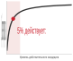
При низкой частоте валидных кандидатов даже строгая проверка пропускает много невалидных кандидатов.
Когда валидные кандидаты редки, даже проверка с малой частотой ложного принятия производит пул прошедших, где сломанные кандидаты составляют большую долю, — та же ловушка базовой частоты, которую Самопроверка и внешние свидетельства показала для одиночного проверенного патча. В применении к пулу кандидатов это асимметрия верификации (принцип «Асимметрия верификации») в количественной форме. Получить прошедшего кандидата и знать, что прошедший кандидат валиден, — разные события, и базовая частота вместе с частотами ошибок проверяющего, а не размер пула, ограничивают, насколько можно доверять прохождению. Поэтому обе частоты ошибок должны быть измерены на реальных задачах для каждой семьи моделей и тестового каркаса.
Хотя Уравнение 3 описывает пул прошедших кандидатов в целом, надёжность единственного кандидата, который возвращает среда исполнения, зависит от правила отбора. Пусть пары «кандидат–проверка» извлекаются независимо и одинаково для фиксированной задачи при постоянных частотах ошибок. Пусть также среда исполнения проверяет пул в фиксированном порядке, не связанном с качеством, возвращает первого кандидата, который прошёл, и воздерживается, если ни один не прошёл. При этом правиле «первого прошедшего» вероятность того, что возвращённый кандидат валиден, равна
Инженерный расчёт 3.4: Выход и риск при асимметричных ошибках верификатора
Задача: политика ремонта генерирует все кандидаты 64 перед выбором. Она использует правило «первый прошедший проверку», описанное выше, и воздерживается, если ни один кандидат не проходит. Что даёт дополнительная широта набора и какой риск остаётся?
Переменные: все ставки гипотетические. Каждый кандидат содержит 1,024 токенов, тарифицируемых по $15 за миллион выходных токенов. Доля валидных кандидатов равна 5 percent, ложное отклонение — 10 percent, ложное принятие — 2 percent. Пусть отдельно авторизованная политика развёртывания разворачивает выбранный кандидат без дополнительной проверки. Дефектное развёртывание влечёт потери от инцидента в размере $500. Только для этого расчёта валидные развёртывания и воздержания не несут потерь от инцидентов, а пропущенные ремонты и задержки остаются неоценёнными.
Расчёт: ожидаемое число прошедших проверку составляет 2.88 валидных и 1.216 невалидных кандидатов, всего 4.096. Из Уравнение 3 следует точность 70.31 percent. При условии, что выбор сделан, вероятность дефектного выбора равна 29.69 percent, а ожидаемые потери от инцидента — $148.44 на каждое выбранное развёртывание.
Вероятность какого-либо выбора равна
Системный вывод: ожидаемые потери от инцидента на попытку составляют примерно 149 выходного счёта, так что стоимость этой задачи задаёт политика принятия, а не цена токена. Точность реагирует на две ручки сопоставимой силы: уменьшение доли ложных принятий вдвое поднимает её с 70.31 percent до 82.6 percent, а удвоение доли валидных кандидатов — до 83.3 percent. Больше кандидаты не двигают ни одну из них. При низкой базовой ставке тратиться следует на то из двух — лучший генератор или более строгую проверку, — что дешевле, а при дорогостоящем пропущенном валидном ремонте следует оценивать и цену ложных отклонений.
При фиксированных
3.4.3 Как поиск эксплуатирует несовершенные проверки
Чем больше кандидатов генерирует поиск и ранжирует по несовершенной оценке или тестовому набору, тем вероятнее, что победивший кандидат — тот, который эксплуатировал слепое пятно оценщика или удалил падающее утверждение вместо исправления ошибки. Фиксированные уровни ошибок описывают пассивную выборку из фиксированного распределения, но адаптивный поиск меняет самих кандидатов. Когда политика поиска направляет генерацию или выбирает максимум зашумлённой оценки, она выталкивает кандидатов в области, где оценщик плохо откалиброван, так что базовые ставки
Регрессионный эффект можно выписать напрямую. Пусть обученный оценщик выдаёт оценку полезности
В единицах
Рост ошибки оценивания у победителя сам по себе не означает, что истинная полезность падает. В упражнении 8(b) независимые гауссовские полезность и шум приводят к тому, что и ожидаемая полезность победителя, и его ожидаемая ошибка оценивания растут с размером пула. Эмпирические исследования сэмплирования best-of-
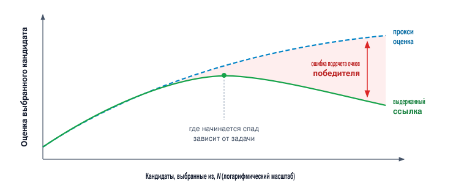
Слепые пятна проверок накапливаются по большим пулам той же биномиальной арифметикой, что и pass@
В ремонте пула соединений патч может пройти тестовый набор либо исправив отсутствующее уведомление о пробуждении, либо удалив юнит-тест-утверждение, проверяющее блокировку потоков-воркеров. Обе правки повышают тестовую оценку, и лишь первая исправляет баг. Поэтому кандидата под тестом нужно изолировать от верификатора, чтобы сгенерированный код не мог править тестовые файлы или подделывать сигналы прохождения.
↪ Изоляция грейдера проводит это разделение вплоть до процесса и интерпретатора кандидата, как развито в Изоляция грейдера.
Изоляция грейдера останавливает вмешательство, но не расширяет покрытие тестового набора: запечатанный регрессионный набор по-прежнему пропускает непротестированные расписания потоков, а обученный судья может по-прежнему предпочитать уверенный, но сломанный код. Оценка должна поэтому тестировать выходы, которые полная политика поиска производит при своём развёрнутом бюджете, явно учитывая ложные принятия и воздержания. Добавление уверенности требует независимой проверки, покрывающей иной режим отказа, а не второго коррелированного оценщика.
Верификация также производит конкретные промежуточные факты, которые последующие ходы могут переиспользовать, включая опровергнутые диагнозы, проверенные инварианты и прошедшие подмножества тестов. Когда проверка опровергает одно допущение внутри многосоставного плана кандидата, среде исполнения не нужно выбрасывать компоненты, которые никогда не зависели от этого допущения, — при условии, что она записывает, какие части плана опираются на какие посылки.
3.5 Пересмотр планов кандидатов
Когда целевой тест опровергает исходный диагноз внутри многосоставного плана ремонта, выбрасывание всего плана тратит впустую валидную работу, такую как проверки совместимости с API, тогда как сохранение плана без изменений оставляет патч и выбор тестов опирающимися на опровергнутую посылку. Пусть агент ремонта ставит диагноз, готовит патч, проверяет ограничения публичного API и выбирает план тестирования для утечки в пуле соединений, а целевой тест затем опровергает диагноз. Чтобы избежать и потерь, и устаревших выводов, среде исполнения нужно определить, какие части кандидата зависят от опровергнутой посылки, прежде чем решать, что должен перегенерировать следующий вызов модели.
Пересматриваемый план кандидата записывает эти зависимости явно. Вместо журналирования прошлых действий он отслеживает неисполненные артефакты кандидата вместе с доказательствами или вышестоящими артефактами, на которые каждый из них опирается. Когда новые доказательства опровергают посылку, среда исполнения инвалидирует и перегенерирует только затронутый подграф, сохраняя поддержанные артефакты нетронутыми, а замещающие артефакты затем проходят собственные проверки. Этот дизайн происходит напрямую из систем поддержания истины (truth maintenance systems), которые записывают явные обоснования для каждого вывода так, что отмена посылки автоматически инвалидирует каждый построенный на ней шаг (Doyle 1979 г.).
3.5.1 Отслеживание зависимостей внутри кандидата
Пусть первый кандидат ремонта объясняет отказ пула соединений слишком коротким клиентским таймаутом. Чтобы знать, какие части этого кандидата выживают, когда тест опровергает гипотезу таймаута, среда исполнения представляет кандидата направленным ациклическим графом с направленным ребром от каждой предпосылки к зависящему от неё артефакту (Таблица 5). Здесь фрагмент исходника, исходный журнал отказов, декларация API и инвентарь тестов — поставляемые входы, тогда как диагноз, кандидат патча, выбор проверок и заметки о совместимости с API — сгенерированные артефакты. Граф записывает, какие компоненты от чего зависят, независимо от того, в каком порядке модель их генерировала.
| Артефакт | Прямые предпосылки | Что вносит артефакт |
|---|---|---|
| Фрагмент исходника | Ревизия репозитория и идентичность файла | Рассматриваемая реализация |
| Диагноз | Фрагмент исходника и наблюдение отказа | Предлагаемое объяснение отказа |
| Кандидат патча | Фрагмент исходника и диагноз | Предлагаемое изменение этой реализации |
| Инвентарь тестов | Ревизия репозитория (поставляемый вход) | Доступные для выбора тесты |
| Выбор проверок | Кандидат патча и инвентарь тестов | Проверки, призванные отличить этот ремонт от неадекватного |
| Заметки о совместимости с API | Ограничения задачи и декларация публичного API | Ограничения, которые должен сохранять каждый приемлемый ремонт |
Теперь пусть тест «waiter-and-return» показывает, что простаивающее соединение вошло в пул, в то время как ожидающий поток-воркер оставался заблокированным после точки уведомления. Это наблюдение опровергает диагноз таймаута и указывает вместо него на пропущенное уведомление о пробуждении. Поскольку и патч таймаута, и его выбор проверок зависят от опровергнутого диагноза, среда исполнения помечает их невалидными и планирует на замену. Фрагмент исходника остаётся валидным, потому что файл репозитория не изменился, а заметки о совместимости с API остаются валидными, потому что ограничения публичного интерфейса не изменились. Среда исполнения строит следующий промпт из всё ещё валидных входов плюс новое тестовое наблюдение, запрашивает новый диагноз, патч и выбор проверок и запускает проверки на новых артефактах.
Такая избирательность повторного использования надёжна ровно настолько, насколько корректно записаны рёбра графа. Граф с пропущенным ребром сохраняет устаревшие выводы точно так же, как неуправляемый промпт-буфер: если заметки о совместимости неявно зависели от сигнатур вспомогательных функций, которые новый патч меняет, то пропуск этого ребра оставляет в силе уже неверные утверждения о совместимости. Отслеживание зависимостей оправдывает себя, когда затраты времени и токенов на сопровождение графа и обход его рёбер меньше, чем стоимость генерации нетронутых ветвей с нуля.
3.5.2 Инвалидация устаревших и опровергнутых свидетельств
Обход графа зависимостей требует различать активно опровергнутое утверждение и наблюдение, чьи предпосылки больше не соответствуют текущему кандидату. Неудачный тест напрямую опровергает утверждение, что патч исправляет ошибку, тогда как успешный тест от более раннего кандидата остаётся верной записью того, что делал тот прежний патч, и при этом ничего не говорит об отредактированном патче, который сейчас на столе. Повторное использование более раннего успешного результата после изменения кода позволило бы непроверенной правке пройти по устаревшему свидетельству, тогда как трактовка просроченного наблюдения как прямого противоречия ошибочно отвергла бы рабочую гипотезу.
Чтобы повторное использование оставалось корректным, каждая записанная наблюдение должно нести полную провенанс: точную ревизию источника или дайджест патча, версию набора тестов, флаги компилятора и среду исполнения. Аналогично, наблюдение, полученное при чтении файла, должно быть привязано к криптографическому хешу содержимого файла на момент чтения, а не к пути к файлу, чьё содержимое последующий шаг может перезаписать.
Когда вход меняется или предпосылка нарушается, среда исполнения помечает узел как неподдерживаемый и обходит направленные рёбра, чтобы найти каждый нижележащий артефакт, требующий проверки. Если узел
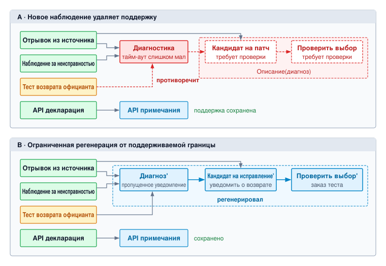
Хеши содержимого и дайджесты среды делают инвалидацию детерминированной только тогда, когда записанная граница охватывает все значимые входы. Интеграционный тест, обращающийся к живому сетевому сервису, может изменить свой результат, даже если локальные файлы побитово идентичны, тогда как правка несвязанного файла README не должна инвалидировать результаты юнит-тестов, чей код и входы не менялись. Корректное повторное использование зависит от проверки полного контекста исполнения (изоляции в песочнице, моков и объявленных входов), а не только временных меток или путей файлов.
Планы кандидатов также должны храниться отдельно от состояния живой среды. Граф зависимостей отслеживает незафиксированные артефакты кандидата и их обоснования; чтение файлов, запись на диск или запуск бинарных файлов в песочнице меняют реальное состояние системы. Удаление инвалидируемого узла из графа плана не откатывает изменённый файл и не освобождает запущенный контейнер, поэтому откат и очистку среда исполнения должна обрабатывать отдельными процедурами восстановления.
↪ Компенсация и очистка внешних эффектов, переживаемых брошенную ветвь кандидата, разбираются в Компенсация в области ветки.
3.5.3 Выбор объёма регенерации плана
Когда обход графа пометил инвалидируемые узлы, среда исполнения должна решить, заменять ли одиночный узел, перестраивать весь его нижележащий подграф или вообще прекращать обдумывание. Замена одиночного шага изолированно терпит неудачу, когда новый артефакт меняет интерфейс, на который опираются нижележащие шаги, тогда как регенерация всего плана с нуля расходует токены и рискует сломать уже работающие части. Чтобы точно ограничить объём ревизии, среда исполнения формирует промпт с ограничениями задачи, всё ещё валидной верхней границей (frontier), наблюдением, опровергнувшим старый шаг, и точным перечнем узлов, помеченных для замены. При ремонте пула соединений промпт запрашивает новый диагноз, патч и выбор проверок, сохраняя неизменную выписку из исходного кода и заметки API. Когда модель возвращает замещающие артефакты, среда исполнения проверяет и то, что они согласуются с сохранёнными артефактами, и то, что их собственные предпосылки выполнены, поскольку локально валидная замена всё ещё может конфликтовать с сохранёнными нижележащими узлами.
В зависимости от того, сколько поддержки отнимает новое наблюдение, среда исполнения выбирает один из трёх вариантов ответа. Рисунок 6 упорядочивает эти три варианта по двум вопросам: по-прежнему ли зависимые затронутого артефакта получают то, что им нужно, и выполняются ли собственные предпосылки задачи:
- Локальный ремонт заменяет одиночный узел, сохраняя его интерфейс и контракты неизменными так, чтобы зависимые остались валидными, — например, исправление искажённого флага оболочки в команде теста без изменения того, что проверяет тест.
- Ресинтез подграфа заменяет узел и всех его потомков: модели передаётся нетронутая верхняя граница, и ей предлагается перестроить путь к цели. При ремонте пула соединений это заменяет диагноз, патч и выбор тестов, сохраняя выписку из исходного кода и заметки о совместимости API.
- Прекращение обдумывания применяется, когда новое свидетельство опровергает предпосылку самой задачи, например отсутствие библиотеки на хосте или учётных данных с правом записи. Ни одна ревизия плана не может исправить нарушенную предпосылку задачи, поэтому среда исполнения прекращает обдумывание и эскалирует или сообщает о неразрешённости задачи вместо расходования новых токенов.
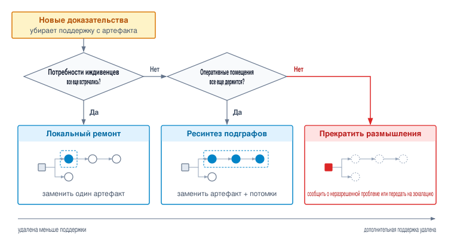
Меньшее — не всегда лучшее. Когда новое свидетельство опровергает раннее рамочное допущение или граф зависимостей стал запутанным, регенерация всего кандидата с нуля часто даёт более чистый и согласованный результат, чем правка большого подграфа — ценой повторной выдачи уже согласованного материала и риска регрессий в уже работающих частях. Выбор между ограниченной ревизией и полной регенерацией взвешивает долю инвалидированного графа против токенов, времени и проверок, необходимых для перестройки и верификации кандидата.
Инженерный расчёт 3.5: Затраты выходных токенов при локальном пересмотре плана
Проблема: пусть кандидат содержит 12 узлов, каждый из которых требует 150 сгенерированных токенов. Новое свидетельство оставляет 3 узлов, требующих замены. Сколько выходных данных экономит ограниченная регенерация, если любой из подходов даёт кандидата, пригодного для тех же последующих проверок?
Математика: умножение полного числа узлов на выход на узел даёт 1,800 токенов для полной регенерации. Умножение числа заменяемых узлов на ту же норму выхода даёт 450 токенов для ограниченной регенерации. Ограниченный запрос генерирует 25 percent от выхода полного запроса, экономя 75 percent этого выхода в предположении одинакового размера узлов.
Системный вывод: ограниченная регенерация экономит точно ту долю плана, которая сохраняет поддержку. Эта экономия линейно уменьшается по мере того, как опровергнутая предпосылка затрагивает всё больше потомков, и исчезает, когда от неё зависит каждый узел; поэтому когда большая часть плана опирается на отвергнутую предпосылку, полная регенерация стоит ненамного дороже и проще в проверке. Этот подсчёт охватывает только сгенерированные токены плана; оба варианта всё равно платят за промпт-вход, интеграцию и проверки верификации.
Эту экономию вывода приходится взвешивать против затрат на сопровождение зависимостей, построение ограниченных промптов и проверку гибридных планов. Когда план кандидата проходит верификацию и переходит к исполнению, он перестаёт быть незафиксированным графом кандидата и становится живым состоянием workflow, которое исполняет каркас, а контрольные точки durable execution переживают отказы машин.
↪ Сохранение зафиксированного состояния плана при отказах рабочих узлов и инфраструктуры разбирается в Долговременное исполнение.
3.5.4 Предотвращение «трещащей» ревизии (thrashing)
Даже когда каждая ограниченная ревизия экономит токены по сравнению с полной регенерацией, цикл ревизии без правил остановки всё ещё может метаться между двумя диагнозами, выдавать косметически разные патчи с одной и той же ошибкой или перегенерировать планы в ответ на безобидные предупреждения компилятора. Поэтому среда исполнения проверяет, отвечает ли предлагаемая ревизия новому свидетельству, действительно ли опровергающему предпосылку, а не трактует любое предупреждение или колебание оценки как повод перепланировать.
Для предотвращения «трещания» среда исполнения вводит жёсткие потолки на число вызовов модели, суммарные токены, число запусков проверок и астрономическое время. Каждая попытка ревизии, включая неудачный локальный ремонт, расходует этот лимит, и те же потолки ограничивают поиск в целом (Глава 3.6.6). Когда бюджет исчерпан, цикл останавливается и сообщает о неразрешённости задачи или эскалирует к оператору-человеку, не сливая непроверенный патч. Появление того же или структурно эквивалентного кандидата при неизменных наблюдениях также вызывает немедленную остановку; возврат к более ранней идее оправдан только если новое тестовое наблюдение изменило свидетельство.
Графы зависимостей позволяют среде исполнения ревизовать одиночного кандидата, не выбрасывая его валидные части, но агент часто держит несколько частичных кандидатов одновременно. Решение о том, какой частичный кандидат расширять следующим, как не допустить, чтобы параллельные ветви портили рабочие пространства друг друга, и когда вообще прекращать поиск, превращает ревизию в ограниченный поиск.
3.6 Ограниченный поиск
Агент-ремонтник теперь держит несколько частичных кандидатов одновременно: часть только что пересмотрена, часть нетронута. На каждом шаге он может сэмплировать свежий патч от корня, расширить существующего частичного кандидата на один сегмент или запустить диагностический зонд, чтобы разделить конкурирующие объяснения. Каждый выбор расходует один и тот же бюджет задачи, создавая при этом разные зависимости планирования. Зонд, от которого зависит следующее расширение кода, лежит на критическом пути. Независимые расширения кандидатов могут выполняться параллельно на слотах рабочих узлов. Отбрасывание тупиковой ветви всё равно теряет уже затраченные на неё токены и время в песочнице. Поэтому поисковой политике нужны структура прореживания, изоляция рабочих пространств между ветвями, раздельные лимиты токенов, времени и памяти, резервирования для незавершённой работы и упорядоченное правило остановки.
3.6.1 Где каждая поисковая структура выполняет отсечение
Декодирование кандидатного патча до полной длины, когда его первая строка уже опирается на ложную посылку, впустую расходует все оставшиеся токены этой ветки, однако проверка после каждого короткого сегмента останавливает генерацию в ожидании скорера. Поисковые структуры обменивают эти две издержки, выбирая, когда проверять и отбрасывать частичные кандидаты. Плоская сэмплирующая схема (flat sampling) ждёт до конца: в best-of-
Поиск по лучу (beam search)6 переносит эту проверку внутрь цикла генерации. Среда исполнения хранит фронт из не более чем
Отсечение на каждом шаге разменивает токены генерации на работу по оцениванию и делает ставку на точность шагового скорера. Если шумная шаговая оценка отбросит префикс, который привёл бы к работоспособному патчу, поиск по лучу фиксированной ширины больше никогда не вернётся к этой ветке, если не добавить возврат назад (backtracking). Наоборот, раннее устранение сломанного префикса экономит все токены и финальные прогоны тестов, которые стоило бы его завершение. Шаговое отсечение окупается, когда оценивание стоит меньше, чем избегаемая последующая генерация, а шаговая проверка редко отвергает корректные префиксы.
Вместо того чтобы одинаково расширять каждого выжившего кандидата на каждой глубине, поиск деревом по промежуточным шагам рассуждения (Yao и др. 2023 г.) направляет следующее расширение к тому частичному кандидату, который выглядит наиболее перспективным или наиболее неопределённым. Монте-Карло поиск по дереву (MCTS) (Coulom 2006 г.; Kocsis и Szepesv’ari 2006 г.) отслеживает счётчики посещений и средние оценки листьев вдоль рёбер дерева поиска. Его правило выбора PUCT7 из AlphaGo (Silver и др. 2016 г.) спускается от корня, выбирая в каждом частичном состоянии
где
Три структуры различаются тем, где они отсекают (Рисунок 7). Best-of-
↪ Radix-кэширование префиксов, позволяющее поздним запросам ветки переиспользовать KV-состояние общих предков, развивается в Поиск префиксов по радикс-дереву.
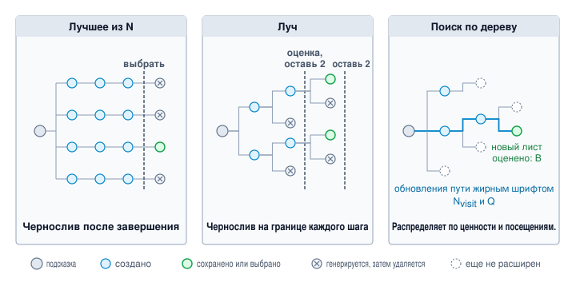
| Структура | Где происходит отсечение | Параллелизм | Состояние поиска | Разделение префиксов |
|---|---|---|---|---|
| Best-of- |
После полных кандидатов, при выборе | Все |
Только общий промпт | |
| Beam | На каждой границе шага, по шаговой оценке | Внутри шага; этапы ждут оценивания | До ширины раз расширений до отсечения, плюс оценки | Каждый сохранённый префикс с расширениями |
| Поиск деревом | Адаптивно, по оценке ценности и посещениям | Нерегулярный; зависит от выбранных листьев | Узлы дерева со счётчиками посещений и оценками ценности | Все предки каждого узла вдоль его пути |
3.6.2 Как шаговое отсечение ограничивает рост дерева
Дерево поиска, которое без отсечения расширяет каждый узел в 4 ветвей на протяжении 10 шагов, даёт 1,048,576 листьев и быстро исчерпывает память и токен-бюджеты. Шаговое отсечение ограничивает этот рост. Пусть каждый сохранённый узел предлагает
При Уравнение 6 ожидаемая ширина фронта на глубине
Пусть каждый узел предлагает 5 расширений, шаговая проверка отвергает 68 percent из них, и поиск идёт на глубину 3. Эффективный коэффициент ветвления равен 1.6. Поскольку доля отказов 68 percent лежит ниже критической доли 80 percent для
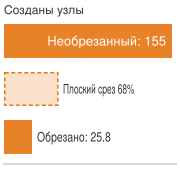
Каждый отвергнутый ребёнок также удаляет поддерево, которое он мог бы вырастить.
Два практических ограничения уточняют этот расчёт. Во-первых, шаговая проверка, ложно отвергающая корректные шаги, убивает хорошие ветки навсегда, поэтому агрессивное отсечение помогает лишь при редких ложных отказах. Во-вторых, когда шагу нужен всего один выживший ребёнок для продолжения, предложение детей по одному требует
3.6.3 Изоляция рабочих пространств между ветками поиска
Если одна ветка поиска редактирует файлы в общем рабочем пространстве, а соседняя ветка затем запускает свои тесты против изменённого рабочего дерева, результаты тестов соседней ветки больше не отражают её собственный кандидатный патч. Хотя частичный кандидат во время декодирования — лишь данные в памяти, его тестирование требует запуска кода против реальной файловой системы и состояния процессов. Поэтому каждая ветка, записывающая файлы или изменяющая состояние, нуждается в собственном изолированном контейнере, снапшоте файловой системы с копированием при записи или детерминированном откате до запуска другой ветки, чтобы каждое наблюдение строго принадлежало тому кандидату и тому снапшоту рабочего пространства, которые его породили.
↪ Задачные рабочие пространства с копированием при записи, сохраняющие файловые изменения каждого запуска приватными, развиваются в Выделение на основе copy-on-write.
Изоляция веток стоит реальных системных ресурсов, даже если большинство веток позже отсекается. Параллельные песочницы потребляют RAM хоста, дисковые объёмы, слоты процессов и пропускную способность сети, а их журналы тестов накапливаются в состоянии среды исполнения. Даже диагностические команды только для чтения нуждаются в песочницах-разрешениях, чтобы не утечь учётные данные хоста или переменные окружения в трассировку поиска. Отсечение ветки убирает её из фронта поиска, но возврат назад по дереву поиска не может «отозвать» исходящий сетевой вызов или отменить запись во внешнюю базу данных. Границы песочниц блокируют такие внешние записи во время поиска, а любое внешнее действие, которое среда исполнения всё же допускает, должно бюджетироваться как необратимое.
3.6.4 Учёт всего поиска
Схлопывание токенов, времён прогонов тестов и памяти в единый составной «поисковый расход» скрывает, какой физический предел поиск достигнет первым, — ведь поиск лучом, сокращающий сгенерированные выходные токены почти вдвое, всё равно может стоить дороже в долларах, если учесть повторные чтения промпта. Поэтому среда исполнения поиска ведёт четыре отдельных счёта: потраченные деньги, физическая работа по единицам, прошедшее время по настенным часам и пиковое живое состояние. Деньги — единственная общая единица, складывающаяся по токенам генератора, вызовам скореров и запускам инструментов. Физическая работа, напротив, приходит в невзаимозаменяемых видах: токены промпта, выходные токены, токены скорера, исполнения тестов и старты песочниц нагружают разные аппаратные ресурсы, и сложение флопов модели с секундами тестов даёт бессмысленное число.
Время на настенных часах зависит от того, как планировщик отображает эти операции на аппаратуру: последовательные этапы складываются вдоль критического пути, параллельные ветви перекрываются в пределах доступных рабочих слотов, а запросы сверх этих слотов ожидают волнами. Пиковый живой объём состояния — четвёртый, отдельный предел, определяемый тем, что должно одновременно находиться в памяти и хранилище (активные KV-кэши, деревья кандидатов, журналы тестов и живые песочницы), а не суммарной работой за весь запуск. Экономия выходных токенов за счёт раннего отсечения часто добавляет повторные чтения промпта, барьеры оценки или параллельное состояние, поэтому ведение четырёх счетов по отдельности показывает, какой именно ресурс реально ограничивает политику.
Инженерный расчёт 3.6: Независимая выборка и ограниченное расширение лучевого поиска
Задача: Агент генерирует патчи-кандидаты сегментами 4 по 128 токенов. Сравните 16 полных кандидатов с шириной луча 4 и 3 расширениями на удерживаемый префикс. Как раннее отсечение и повторная оценка меняют итоговые показатели ресурсов?
Условия: Каждый запрос генератора передаёт один и тот же промпт задачи длиной 4,096 токенов плюс свой удерживаемый сгенерированный префикс. Иллюстративное время генерации на токен из Оценка аппаратной работы на вызов составляет 21.075 ms. Предполагается, что 8 потоков генерации могут поддерживать эту скорость параллельно. Оценщик читает весь сгенерированный префикс, исключая общий промпт задачи, и обрабатывает запросы последовательно с фиксированными 15 ms на запрос независимо от длины префикса. Поэтому рост с длиной префикса, описанный в Уравнение 2, проявляется в счёте токенов оценщика, а не в этой заданной величине времени. Каждый финальный тест занимает 0.5 s, при этом 8 изолированных прогонов доступны параллельно. Генерация, оценка и финальное тестирование в этом расписании не перекрываются.
Гипотетические цены за миллион токенов: $3 за вход генератора, $15 за выход и $0.50 за вход оценщика. Входные начисления включают каждый переданный токен, без скидки на повторное использование префикса. Временной подытог не включает prefill, ожидание в очереди, передачу запроса, подготовку рабочего пространства и очистку. Это не прогноз полной задержки обслуживания, а подытог начислений за токены исключает расходы на исполнение и инфраструктуру.
Расчёт: Умножение 16 кандидатов на 512 выходных токенов на кандидата даёт 8,192 выходных токенов. Умножение того же числа кандидатов на длину общего промпта даёт 65,536 входных токенов. Генерация занимает 2 волн полных кандидатов, за которыми следуют 2 тестовые волны. Умножение волн генерации на длину кандидата и норматив на токен, а затем добавление тестовых волн, умноженных на длительность теста, даёт 22.58 s. Умножение каждого счётчика токенов на соответствующую цену даёт подытог начислений за токены в размере $0.3195.
Луч (beam) расширяет фронтиры на 3, 9, 12, 12 расширений в последовательных этапах, потому что корень расширяется 3 способами на этапе 1, эти 3 префиксов расширяются до 9 расширений на этапе 2, а отсечение удерживает не более ширины луча (4 префиксов) с этапа 2 и далее, так что каждый последующий этап расширяет 4
Системный вывод: Луч генерирует на 43.75 percent меньше выходных токенов, стоимостью $0.054, но повторная передача промпта задачи и удерживаемых префиксов при каждом расширении стоит на $0.272 больше по входу, поэтому его счёт за токены выше. Регулируемый параметр здесь — цена повторного входа. Счёт луча опускается ниже плоской сэмплинг-стратегии только тогда, когда входные токены стоят менее 17.3 percent от прейскурантной цены — режим, который создаёт кэш префиксов. Его более короткие волны генерации уже дают ему меньший временной подытог в этом расписании, до добавления опущенного prefill. Качество в этих итогах не участвует; выбор между двумя вариантами опирается на результаты проверок, которые каждый из них даёт.
3.6.5 Резервирование бюджета до запуска работы
Проверять, сколько токенов потратил поиск, только после возврата параллельных вызовов модели — слишком поздно, чтобы предотвратить перерасход бюджета, потому что восемь выполняющихся вызовов могут все завершиться и выставить свой полный норматив выходных токенов до того, как счётчик бюджета обновится. Прежде чем отправить любое расширение кандидата, среда исполнения должна зарезервировать максимально разрешённые выходные токены вызова вместе с его нормативами на оценщика и песочницу, держать осевший расход плюс открытые резервирования ниже потолков поиска и освобождать неиспользованную ёмкость только после завершения вызова. Чек об использовании после вызова сообщает среде исполнения, что списать, но только резервирование до отправки может заранее ограничить параллельный расход.
↪ Начисление каждой ожидающей операции её худшего потолка до расчёта — это «ограниченная ответственность» (bounded-liability admission), развитая в Резервирование и расчёт.
Глубина поиска и время на настенных часах тоже нуждаются в отдельных пределах. Ограничение глубины лимитирует цепочку последовательных расширений или обращений к инструментам, а дедлайн ограничивает воспринимаемую пользователем задержку. По истечении дедлайна среда исполнения перестаёт принимать новую работу, отбрасывает запоздавшие ответы из истёкшей фазы и отправляет сигналы отмены выполняющимся вызовам. Однако, как показано в Потоковая передача и отмена, отправка запроса на отмену не гарантирует немедленной остановки удалённого сервера; сервер, игнорирующий отмену, может продолжать декодирование и биллинг до полного выходного норматива вызова. Пока удалённый сервис не завершит запрос, среда исполнения обязана держать полное резервирование списанным против бюджета.
Исчерпание бюджета завершает поиск без снижения планки приёмки. Завершённый кандидат всё ещё может провалить регрессионные тесты, и высокий выученный балл не может заменить необходимую проверку. Если к достижению потолка ни один кандидат не соответствует контракту приёмки, среда исполнения сообщает о неполном результате, воздерживается или эскалирует к человеку-оператору. Это разделение — замыкание инварианта (принцип 1) применительно к рассуждению: механические пределы стоят ниже модели, чтобы остановить расход, а доказательства приёмки стоят выше модели, чтобы разрешить вернуть ответ.
3.6.6 Когда останавливать поиск рано
Жёсткие потолки останавливают поиск, когда исчерпан его норматив, тогда как правила ранней остановки завершают поиск внутри потолков, как только кандидат проходит проверку или следующий раунд перестаёт стоить своих затрат. Многим рабочим нагрузкам по исправлению нужен лишь первый кандидат, отвечающий критериям приёмки, — правило остановки, известное как сатисфакция (satisficing).9 Как только кандидат проходит требуемые проверки и правила политики, поиск останавливается и возвращает его. Если этап поиска проверяет только компиляцию, остановка на первой компилирующейся заплатке передаёт полномочия на тестирование и развёртывание следующему этапу конвейера.
Явная вторичная цель может оправдать продолжение поиска после нахождения приемлемого кандидата — например, поиск меньшего диффа или более быстрого плана запроса в пределах оставшегося бюджета. Растущий сам по себе выученный балл не оправдывает продолжение, если проверочные бенчмарки на отложенных данных показывают, что более высокие баллы за порогом прохождения редко улучшают реальные результаты. Поэтому продолжение требует явной оценки того, сколько стоит следующая единица работы.
Предельная остановка (marginal stopping)10 спрашивает, стоит ли ожидаемый прирост приёмки от следующего раунда его добавленной стоимости. Во время живого исправления среда исполнения не знает точной вероятности того, что следующая попытка пройдёт, поэтому оценивает этот прирост по калибровочным кривым, измеренным на отложенных задачах, или по сигналам прогресса вроде уменьшения числа проваливающихся тестов. Поскольку любой отдельный диагностический сигнал — лишь частичный сигнал, эти оценки применимы только к рабочим нагрузкам и тестовым наборам, похожим на калибровочный набор.
Для вложенной последовательности лимитов раундов при той же рабочей нагрузке и критерии приёмки пусть
где
Числитель измеряет прирост оценённой вероятности проверенного прохождения, а не число новых кандидатов или рост эвристического балла. Асимметрия верификации (принцип «Асимметрия верификации») объясняет почему: генерация большего числа кандидатов и получение проверенного решения — разные события. Поиск, чья откалиброванная вероятность прохождения остаётся плоской, сжигает бюджет без прогресса, сколько бы токенов он ни сгенерировал. Порог
Для рабочих нагрузок насыщения (satisficing) среда исполнения применяет эти три условия остановки в фиксированном порядке, прежде чем допустить новую работу (Рисунок 8). Во-первых, жёсткие потолки по токенам, вызовам, глубине или астрономическому времени безусловно останавливают приём новой работы; если приемлемый кандидат уже имеется, он направляется на этап принятия, а иначе среда воздерживается или эскалирует. Во-вторых, внутри этих потолков любой кандидат, отвечающий критериям принятия, останавливает поиск и направляется на этап принятия. В-третьих, когда потолки ещё не исчерпаны и ни один кандидат ещё не прошёл, маргинальное правило остановки (Уравнение 7) досрочно завершает поиск, если ожидаемая выгода следующего раунда на доллар опускается ниже
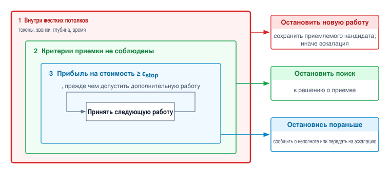
Контрольная точка 3.2: Учёт при ограниченном поиске
Учётные записи ресурсов и политика остановки должны учитывать работу даже тогда, когда она не приводит к принятому результату.
Структуры поиска, учётные записи ресурсов и правила остановки определяют, как одна политика обдумывания работает внутри своих границ. Выбор среди конкурирующих политик требует сравнения их сквозных долей прохождения, фактических затрат и завершений в срок на одной и той же рабочей нагрузке, засчитывая каждую неудавшуюся и прерванную по таймауту попытку в счёт принятых результатов.
3.7 Оценка политик обдумывания
Предположим, итеративная поисковая политика разрешает больше сбоев пула соединений, чем одношаговый базовый вариант. Эта выгода может исходить от самого алгоритма поиска, а может — от большего бюджета токенов, более сильной базовой модели или молчаливого исключения задач с таймаутом из знаменателя. Поэтому для оценки любой политики, объединяющей распределение кандидатов, отбор, проверки и досрочную остановку, требуется фиксировать три вещи: точные потолки ресурсов и разрешения, выданные каждой политике; фактически потраченные токены, проверки и астрономическое время; и судьбу каждой задачи, не сумевшей дать принятый результат.
3.7.1 Контролируемые и системные сравнения
Сравнение много раундового поиска на новой модели с одним вызовом на старой модели или подсчёт только задач, завершившихся до крайнего срока, смешивают эффект политики поиска со способностями модели и смещением выжившего. Контролируемое сравнение политик изолирует политику поиска: базовая модель, конфигурация обслуживания, задачи бенчмарка, интерфейсы инструментов и критерии принятия фиксируются, а варьируется только правило обдумывания при одних и тех же потолках ресурсов и крайнем сроке. Промпт-токены, выходные токены, запуски проверок и слоты конкурентности следует указывать как отдельные потолки, а не сворачивать в один расплывчатый «бюджет вычислений». Поскольку хорошая политика останавливается досрочно, когда кандидат прошёл, неиспользованный бюджет отражает эффективность, а не нечестность теста.
↪ Полные политики агентов сравниваются при сопоставимых бюджетах, с начислением каждой начатой попытки, методом, разработанным в Сравнение при выровненном бюджете.
Сравнение на уровне системного дизайна отвечает на более широкий инженерный вопрос: как два полных технологических стека соотносятся друг с другом по стоимости, задержке и точности. Например, инженер может сравнить один вызов большой модели с повторными вызовами меньшей и более быстрой модели при одинаковых лимитах по деньгам и задержке. Такое сравнение подсказывает команде, какой стек развёртывать, но не позволяет отделить эффект поиска от различия между двумя моделями. Разделение контролируемых тестов политик и сравнений на уровне стеков не даёт командам засчитывать обновление модели в заслуги своего алгоритма поиска.
Журналы оценки должны фиксировать каждую начатую задачу, включая явные отказы, воздержания и таймауты по крайнему сроку. Чтобы не засчитывать поиску эксплуатацию его собственного скорера (отказ Гудхарта из Глава 3.4.3), итоговое качество выходных данных должно оцениваться независимой проверкой, а не внутренним баллом, направлявшим поиск. В журналах также следует разделять три режима отказа: ложное принятие (возврат сломанного кандидата), воздержание или эскалация, и таймаут по крайнему сроку. При сообщении частот ошибок чекера явно указывайте знаменатель.11 Доля сломанных кандидатов, прошедших проверку (
Полные затраты включают каждый использованный по пути ресурс: отсечённые ветви, повторный префилл промпта между ходами, запуски верификаторов и токены, декодированные «в полёте» после сигнала отмены. Деление полных затрат по всей когорте задач на число задач, давших принятый результат, даёт эффективную стоимость на принятую задачу — когортную меру
3.7.2 Политики при жёстком сроке
Политика обдумывания, допускающая на бумаге три раунда обратной связи, на практике может выполнить максимум два раунда, когда каждый раунд занимает 30 секунд, а крайний срок обслуживания — 75 секунд. Чтобы показать, как лимиты конкурентности и астрономические сроки ограничивают политику в продакшене, ноутбук ниже сравнивает три политики, оцениваемые изолированным тестовым набором, а не всеведущим оракулом. Все вероятности — заданные параметры, выбранные так, чтобы показать, как конкурентность, правила остановки и бюджеты токенов взаимодействуют в рамках одного крайнего срока.
Инженерный расчёт 3.7: Три политики, один крайний срок
Сценарий: Рассмотрим рабочую нагрузку автоматического исправления программного обеспечения, проверяемую изолированным набором регрессионных тестов. Начальный кандидат проходит набор с гипотетической вероятностью
Каждый начальный запрос отправляет 2,048 промпт-токенов, каждый кандидат генерирует 1,000 токенов, а запуск набора тестов занимает 10 s. Используя иллюстративное время декодирования 21.075 ms на токен из Оценка аппаратной работы на вызов, предположим, что параллельные потоки сохраняют ту же скорость на токен, а тесты выполняются на выделенных работниках без конкуренции (без учёта префилла, очередей, сетевой передачи и накладных расходов фильтрации). Цены токенов: $3 за миллион промпт-токенов и $15 за миллион выходных токенов, без скидки на префиксный кэш.
Вариант A (один кандидат): Сгенерировать и протестировать одного кандидата. Он проходит набор с вероятностью 40 percent, расходуя 2,048 промпт-токенов, 1,000 сгенерированных токенов и один запуск теста. Попытка завершается за 31.07 s при счёте модели $0.02114; если тест не пройден, среда исполнения воздерживается.
Вариант B (параллельный веер): Отправить все 8 кандидатов сразу без досрочной остановки, тестировать каждый по мере готовности и вернуть первый прошедший патч в порядке индексов. Хотя бы один из
Вариант C (последовательная обратная связь): Сгенерировать одного кандидата и немедленно остановиться, если он проходит. Если нет, добавить в промпт несостоявшийся патч и трассу отказа объёмом 340 токенов и запросить исправление, которое проходит с условной вероятностью
Математика: Поскольку третий раунд отсечён крайним сроком, последовательная обратная связь проходит с вероятностью
Системный вывод: На каждое принятое исправление счёт модели составляет $0.0529 для варианта A, $0.0594 для варианта C и $0.1720 для варианта B (3.3× от одно-кандидатного базового варианта). Последовательная обратная связь поднимает долю прохождения с 40 percent до 61 percent при небольшой наценке за принятую задачу, тогда как параллельный веер достигает 98.32 percent при значительно более крутом счёте на принятое исправление.
Дедлайн решает, какая политика вообще может выполниться. Когда у сервиса есть место лишь на один раунд 31.07 s, параллельная широта здесь — единственный вариант, улучшающий долю успешных проходов одноразового вызова 40 percent. Когда дедлайн 75 s допускает два раунда, последовательная обратная связь повышает долю успешных проходов при заметно меньшем счёте токенов, чем широта, а третий раунд при 93.22 s не успел бы завершиться в срок. В продакшене стоимость запуска тестов и доля ложных принятий должны учитываться наряду со счётом токенов, чтобы прохождение набора тестов отслеживало реальные исправления задач.
3.7.3 Выбор рабочей точки
Ни одна политика из приведённого выше сравнения не выигрывает по всем осям: одиночный вызов самый дешёвый, параллельная широта завершается за один раунд с наибольшей долей успешных проходов, а двухраундовая обратная связь достигает промежуточной доли при значительно меньшем счёте токенов, чем широта. Каждая из трёх лежит на фронте Парето. Политика строго доминируется, только если другая допустимая политика не уступает ей по каждой метрике (задержка, счёт токенов, нагрузка на проверку и доля успешных проходов) и строго превосходит хотя бы по одной. Среди недоминируемых политик рабочую точку выбирают дедлайн сервиса, бюджетный лимит и толерантность к ошибкам.
Выбор рабочей точки требует тестирования в тех же ограничениях, которые сервис будет соблюдать в продакшене. Аналитические формулы не позволяют подставить произвольный «эффективный размер пула» в pass@
3.8 Заблуждения и подводные камни
Самые распространённые ошибки в вычислениях во время инференса происходят из отождествления дополнительной работы с доказательством прогресса. Дополнительные токены, более широкие пулы и более долгие поиски окупаются лишь тогда, когда пул содержит разнообразные гипотезы, проверка отличает валидные исправления от правдоподобных ошибок, а бюджетный учёт считает каждую отброшенную ветвь. Когда любой из этих элементов отсутствует, расход дополнительной вычислительной мощности лишь быстрее сжигает бюджет или всё надёжнее отбирает слепые зоны проверяющего.
Заблуждение: Больше сгенерированных токенов обязательно даёт лучший ответ.
Расширенное рассуждение может помочь модели проследить ограничения, уже присутствующие в промпте, но с той же лёгкостью может развёртывать и защищать неверное первоначальное предположение. Когда открытый вопрос касается поведения во время исполнения, генерация токенов не может восполнить недостающее наблюдение. В Глава 3.1 генерация объяснения на 1,024 токенов занимает 21.58 s — в 539.5× раза больше, чем 40 ms тестового запуска, непосредственно разделяющего две гипотезы. Количество токенов измеряет расход, а не прогресс; дополнительные токены рассуждения оправдывают себя, только если бенчмарки показывают, что они достаточно поднимают долю принятых успешных проходов, чтобы окупить свою задержку и стоимость.
Подводный камень: Считать независимые выборки независимыми способностями.
Выборки, извлечённые независимо для данного промпта, всё ещё разделяют одни и те же веса модели и слепые зоны, поэтому подстановка среднего pass rate рабочей нагрузки в pass@
Заблуждение: Проверка с низкой долей ложных принятий делает почти каждое прохождение заслуживающим доверия.
Насколько заслуживает доверия вердикт «прошёл», зависит от базовой доли валидных кандидатов у генератора не меньше, чем от уровней ошибок самой проверки (Уравнение 3). Когда валидные кандидаты редки, даже небольшая доля ложных принятий позволяет сломанным кандидатам заполнить большую часть прошедшего пула. При доле ложных принятий 2 percent, доле ложных отклонений 10 percent и базовой доле валидных кандидатов 5 percent лишь 70.31 percent прошедших кандидатов валидны, а селектор «первого прошедшего» возвращает сломанное исправление в 29.26 percent попыток решения задач (блокнот 3.4). На трудных задачах повышение базовой доли у генератора влияет на точность ничуть не меньше, чем ужесточение проверки.
Подводный камень: Оплачивать только финальный ответ.
Отсечённые ветви, повторный префилл промпта, тестовые запуски и вызовы скорера потребляют ресурсы, а отменённые по дедлайну выполняющиеся запросы часто продолжают тарифицироваться, пока удалённый сервер их не закроет. Оценка политики рассуждения по токенам её финального возвращённого ответа скрывает большую часть её стоимости. В блокноте 3.7 параллельная широта возвращает единственный патч на 1,000 токенов, но тарифицирует 8,000 выходных токенов на задачу и расходует 8,137 выходных токенов на каждую прошедшую задачу. Точно так же beam search в блокноте 3.6 читает 156,288 входных токенов, чтобы выдать 4 финальных выживших. Системы учёта производственной стоимости должны списывать каждую отброшенную ветвь и неудачную попытку на принятые задачи.
Заблуждение: Кандидат с наивысшим баллом завершил задачу.
Скорер упорядочивает кандидатов по тому прокси, для измерения которого был построен, и выбор максимального балла концентрирует положительные ошибки скоринга в победителе. При равных истинных полезностях и независимом гауссовом шуме ожидаемая ошибка скоринга победителя среди 64 кандидатов составляет около 2.3 стандартных отклонений (Уравнение 4), а лазейка в проверяющем, присутствующая лишь в 0.5 percent одиночных кандидатов, проявляется в 27.4 percent пулов из 64 кандидатов. Высокий относительный балл — ни доказательство, ни разрешение для свойств, которые верификатор не проверял. Когда бюджет исчерпан, а ни один кандидат не прошёл проверку принятия, кандидат с наивысшим баллом остаётся неподтверждённой неудачей.
3.9 Итоги
Вычисления во время инференса превращают стоимость решения в явный компромисс во время исполнения. Пока веса модели фиксируют, что способен сделать одиночный прямой проход, среда исполнения выбирает, сколько дополнительной работы потратить, потратить ли её на глубину, широту или обратную связь и какие свидетельства оправдывают остановку. Дополнительное рассуждение снижает стоимость на принятую задачу только когда выполняются все три звена. Генерация извлекает валидного кандидата, которого пропустил одиночный вызов, селектор выбирает этого кандидата из пула, а верификатор проверяет то свойство, которое задача действительно требует. Если любое звено отказывает, стоимость попытки растёт, доля принятия
| Уравнение | Что ограничивает или решает | Где выведено |
|---|---|---|
| Критический путь расширения одного кандидата против параллельного сэмплирования |
Уравнение 1 | |
| Задержка и рост входа при ревизии, обусловленной наблюдениями, в контексте с дозаписью | Уравнение 1 | |
| Доступность кандидатов для одной задачи и потолок любого селектора, возвращающего неизменённого члена пула | Глава 3.3.3 | |
| Как вероятность принятия и ожидаемая стоимость попытки совместно определяют стоимость на принятую задачу | Уравнение (2) | |
| Доля прошедших кандидатов, которые валидны; не меняется с размером пула при фиксированных уровнях ошибок | Уравнение 3 | |
| Вход скорера для поэтапных проверок, заново оценивающих каждый растущий префикс без переиспользования | Уравнение 2 | |
| Граница максимального шума для ошибки скоринга выбранного и шанс, что пул содержит эксплуатацию проверки | Уравнение 4 | |
| Какое расширение частичного кандидата получает следующую единицу поиска по дереву | Уравнение 5 | |
| Сохраняет ли прореживание конечность дерева поиска и ожидаемое число узлов до глубины |
Уравнение 6 | |
| Досрочная остановка после проверок жёсткого лимита и satisficing, по инкрементальной ожидаемой стоимости остановленной политики | Уравнение 7 |
Основные выводы: Больше работы требует политики с ограничениями
- Замечайте, когда вопрос эмпирический: генерация дополнительных токенов заново рассматривает то, что уже есть в промпте, тогда как запуск внешней проверки привносит новые факты о времени исполнения. В ремонте пула соединений генерация одного объясняющего трейса заняла в 539.5× раза больше времени, чем целенаправленный пробный запуск, разделивший две гипотезы.
- Пул не лучше своего селектора: pass@
ограничивает то, что может вернуть селектор, возвращающий неизменённого члена, а не то, что он возвращает фактически. Наивное усреднение долей успешных проходов по смешанной рабочей нагрузке предсказывает 94.2 percent успеха по 8 кандидатам, тогда как истинный пул даёт лишь 50.0 percent, потому что дополнительные выборки не решают задачи, где у модели нулевой шанс на успех. - Прохождение наследует базовую долю: когда валидные кандидаты составляют 5 percent выхода генератора, верификатор с долей ложных принятий 2 percent оставляет валидными лишь 70.31 percent прошедших кандидатов. При фиксированном IID-правиле первого прошедшего возвращённые кандидаты имеют ту же точность независимо от размера пула. При равных истинных полезностях и независимом гауссовом шуме выбор наивысшего балла среди 64 кандидатов завышает балл победителя примерно на 2.3 стандартных отклонений шума.
- Ревизуйте по записанным зависимостям: когда наблюдение опровергает допущение, перегенерируйте только те артефакты, которые от него зависят, а не перестраивайте весь план кандидата. Отсутствующие рёбра зависимостей позволяют устаревшим выводам незаметно выживать, а ревизия плана никогда не отменяет уже зафиксированные во внешних системах побочные эффекты.
- Бюджеты завершают поиски, а не неопределённость: каждая отсечённая ветвь, вызов верификатора и неудачная попытка входят в стоимость на принятую задачу
, а дедлайны сервиса ограничивают число последовательных раундов. Когда бюджет или дедлайн исчерпаны без принятого кандидата, среда исполнения должна воздержаться или эскалировать, а не возвращать кандидата с наивысшим баллом без проверки.
Асимметрия верификации (принцип «Асимметрия верификации») даёт практический порядок диагностики любой политики рассуждения, у которой стоимость на принятую задачу слишком высока. Сначала проверьте доступность пула по каждой задаче через pass@
3.10 Исторический контекст и дополнительная литература
Расход вычислений в момент решения восходит к самым ранним игровым программам. Проект шахматной программы Клода Шеннона 1950 года разделял генерацию ходов-кандидатов и оценку получающихся позиций на доске эвристической функцией оценки (Shannon 1950 г.). Поскольку игровые деревья растут экспоненциально с глубиной, искать каждую ветвь до конца было невозможно, и эвристический поиск — генерация кандидатов с отсечением слабых ветвей по предметным оценкам — стал центральной темой искусственного интеллекта (Newell и Simon 1976 г.). Beam search пришёл через распознавание речи в HARPY (Lowerre 1976 г.), а два правила остановки, используемые в этой главе, пришли из статистики и экономики: последовательный критерий отношения правдоподобий Абрахама Вальда (Wald 1945 г.) и satisficing Герберта Саймона (Simon 1956 г.).
Ревизия с учётом зависимостей имеет столь же долгую историю в системах и планировании. Ранние робототехнические планировщики, такие как STRIPS и PLANEX, сверяли предусловия плана с показаниями датчиков и перепланировали, когда наблюдение противоречило предполагаемому состоянию (Fikes и др. 1972 г.). Системы поддержания истинности (Doyle 1979 г.) и make (Feldman 1979 г.) превратили эту идею в явные графы зависимостей, которые используются сегодня в ревизуемых планах кандидатов. По мере расширения пространств поиска Monte Carlo tree search (Coulom 2006 г.; Kocsis и Szepesv’ari 2006 г.) ввёл расширение дерева на основе бандитов, а AlphaGo объединила PUCT с нейронными сетями политики и ценности, чтобы вести поиск через огромные коэффициенты ветвления (Silver и др. 2016 г.).
Языковые модели свели эти поисковые механизмы воедино над текстом и кодом. В синтезе программ pass@
Более поздние работы трактуют вычисления во время инференса как явный бюджет, распределяемый по осям. Snell и др. (2024 г.) показал, что лучшая смесь последовательной ревизии, параллельного сэмплирования и поиска с верификатором зависит от трудности задачи. Лёгкие задачи благоприятствуют ревизии, средние — гибридному поиску, а задачи, где базовая модель имеет почти нулевой успех, требуют более сильной модели, а не большего числа выборок. Затем обучение с подкреплением на верифицируемых задачах натренировало модели вести длинные внутренние рассуждения, проверяющие идеи и возвращающиеся назад внутри одной генерации (DeepSeek-AI и др. 2025 г.). Наконец, упор поиска против обученных моделей вознаграждения обнажил закон Гудхарта (Goodhart 1984 г.) в форме сверхоптимизации модели вознаграждения (Gao и др. 2023 г.), где прокси-балл победителя продолжает расти, тогда как точность на отложенных данных достигает пика и падает.
- Поиск как решение задач (Newell и Simon 1976 г.). Вводит эвристический поиск как генерацию и отсечение гипотез в условиях ограниченных ресурсов — каркас, на котором строятся политики вычислений во время инференса.
- Monte Carlo tree search (Browne и др. 2012 г.). Обзор правил выбора, роллаутов и операторов резервного копирования в поиске по дереву, адаптированных для многошагового поиска языковых моделей.
- Обучаемые верификаторы (Cobbe и др. 2021 г.). Показывает, что сэмплирование кандидатов и их ранжирование обученным верификатором может превзойти одно лишь масштабирование параметров генератора.
- Надзор за процессом (Lightman и др. 2024 г.). Сравнивает надзор на уровне исходов и на уровне шагов, детализируя стоимость разметки и выгоды отсечения у моделей процессного вознаграждения.
- Сверхоптимизация модели вознаграждения (Gao и др. 2023 г.). Измеряет, как прокси-баллы вознаграждения расходятся с точностью на отложенных данных по мере роста размера пула best-of-
. - Вычислительно-оптимальное распределение во время инференса (Snell и др. 2024 г.). Анализирует, как фронт между параллельным сэмплированием, ревизией и поиском по дереву смещается с трудностью задачи при фиксированном бюджете вычислений.
3.11 Упражнения
Если в условии задачи не оговорено иное, используйте гипотетические исходные данные из Таблица 8. Это входные данные задач, подобранные ради удобной арифметики, а не измерения какой-либо модели или сервиса. Пренебрегайте временем префилла, ожидания в очереди и транспортировки, и не применяйте скидку за префиксный кэш, если задача её не вводит.
| Величина | Обозначение | Дано |
|---|---|---|
| Время генерации одного выходного токена на один поток | 20 ms | |
| Цена входных токенов генератора | $3 за миллион токенов | |
| Цена выходных токенов генератора | $15 за миллион токенов | |
| Цена входных токенов обученной оценивающей модели | $0.50 за миллион токенов |
1. Три распределения, один репозиторий (базовый уровень). Запрос на исправление содержит промпт длиной
- По Уравнение 1 вычислите критический путь, входные токены, выходные токены и счёт в модельных токенах для каждого распределения.
- Контекст репозитория вырастает до
токенов. Пересчитайте три счёта и премию breadth в токенах и долларах. - Владелец задачи теперь требует результат в течение 60 s. Какое распределение укладывается в дедлайн и с каким счётом? Префиксный кэш взимал бы за повторно считываемые токены промпта 10 процентов от прайсовой цены. Сколько тогда стоит breadth, и какой опущенный в этом расчёте член инженеру следует измерить, прежде чем принимать решение в его пользу?
2. Подбор размера пула под целевое значение (базовый уровень). Для фиксированной задачи на исправление независимые кандидаты проходят проверку принятия с вероятностью
- Найдите минимальный пул
, при котором pass@ достигает 90 процентов, и прирост доступности, который даёт его последний кандидат. - Сравните число кандидатов, расходуемых на одно принятое исправление, для параллельного пула и для последовательных повторов, которые останавливаются на первом успехе и сдаются после
попыток. Что покупает параллельный пул за свою премию? - Рабочая нагрузка на деле смешанная: половина задач проходит с вероятностью
на кандидата, а половина не проходит никогда, так что средняя вероятность по-прежнему . Какую успешность пула доставляет размер пула из пункта (a), и какую максимальную успешность пула может доставить любой ? Что среде исполнения следует делать со второй половиной нагрузки вместо этого? - В бенчмарке для одной задачи 4 из 20 сэмплов проходят. Вычислите подмножественную оценку pass@5 и сравните её с plug-in значением
.
3. Насколько строгой должна быть проверка? (базовый уровень). Пул кандидатов имеет долю валидных кандидатов
- Вычислите вероятность прохода
и точность по Уравнение 3. - Точность должна достичь 95 процентов. Найдите наибольшее
, при котором цель достигается при данном , и, альтернативно, наименьшее , при котором цель достигается с текущей проверкой. - Политика предварительно генерирует 32 кандидатов и проверяет их в фиксированном порядке до первого прохода, воздерживаясь, если ни один не проходит. Вычислите вероятность какого-либо выбора, вероятность того, что в батче есть хотя бы один ложный проход, и вероятность выбрать дефектного кандидата. Объясните, почему вторая и третья величины различаются.
- Более строгая проверка имеет
и и стоит $0.40 за запуск. Дефектный выбор обходится в $2,000 потерь от инцидента. Сравните обе проверки по ожидаемым потерям от инцидента плюс ожидаемой стоимости проверки на попытку и решите, какую развернуть.
4. Сколько стоит пошаговое оценивание (средний уровень). Обученная оценка процесса читает вход задачи на
- По Уравнение 2 вычислите вход оценивающей модели на траекторию и на задачу, когда каждый префикс пересчитывается с нуля, и когда интерфейс поддерживает инкрементальное переиспользование префикса.
- Для данного
и , начиная с какого числа шагов квадратичный член превышает член ? - Без переиспользования префикса команда предлагает оценивать только каждый четвёртый шаг. Вычислите её вход оценивающей модели и счёт на задачу. Дефектный шаг тогда обнаруживается в среднем на 1.5 шага позже, и каждая сокращённая траектория генерирует эти лишние шаги по выходной цене. Ограничьте добавленную стоимость генерации на задачу и порекомендуйте шаг прореживания оценивания с переиспользованием префикса и без него.
5. Удержание дерева конечным (средний уровень). Каждый удерживаемый узел предлагает
- Вычислите
по Уравнение 6 и ожидаемые числа узлов и токенов с прореживанием и без. Какие ожидаемые значения оказываются ниже потолка и почему ожидаемое значение ниже потолка не гарантирует, что каждый отдельный запуск уложится? - Какая доля отвержений заставила бы дерево затухнуть само по себе, и почему столь высокая доля отвержений редко достижима?
- Шаговая проверка также отвергает валидные шаги с вероятностью
. Корректное решение требует, чтобы пять последовательных валидных шагов уцелели. Вычислите вероятность выживания при и наибольшее , при котором выживание остаётся не ниже 80 процентов. Что это означает для настройки порога проверки?
6. Ожидающий клиент задаёт политику (средний уровень). Агент поддержки отвечает на вопрос о политике, пока клиент ждёт. Каждый запрос несёт промпт на
- Вычислите длительность одного раунда генерации и проверки. Сколько раундов feedback укладывается в дедлайн и какую вероятность прохода поэтому доставляет feedback?
- Для параллельного breadth от
до вычислите вероятность прохода, счёт в модельных токенах на запрос и счёт на один проходной ответ. Найдите минимальное , достигающее 95 процентов. - Сервис может удерживать 600 одновременных потоков декодирования для всех сессий. Сколько одновременных сессий поддерживает выбор из пункта (b) по сравнению с одним кандидатом? Какой ресурс ограничивает эту политику?
- Сопоставьте это со сценарием ремонта (notebook 3.7), где второй раунд feedback укладывался в дедлайн. Назовите ограничение, изменившее ответ, и укажите одно изменение дизайна, которое сделало бы feedback пригодным для агента поддержки.
7. Ограничение области перегенерации (средний уровень). Кандидат на исправление записывает сгенерированные артефакты. Каждый перечислен здесь со своими выходными токенами и прямыми зависимостями: диагноз
- Тест «ждущий и возвращающий» противоречит
. Перечислите и вычислите выходные токены ограниченной перегенерации (диагноз и его потомки) против полной перегенерации. - Вместо этого меняется объявление API, а диагноз остаётся в силе. Какие артефакты нуждаются в пересмотре и какую долю выхода экономит ограниченная перегенерация?
- Патч пула на самом деле вызывает публичный конструктор пула, то есть
зависит от объявления API, но это ребро не было записано. После изменения объявления какие устаревшие артефакты переживут обход графа и что среда исполнения могла бы тогда ошибочно переиспользовать? Предложите, как среде исполнения следует записывать рёбра, чтобы такой отказ не мог произойти незаметно, и укажите, чего это стоит.
8. Судья под давлением отбора (продвинутый уровень). Агент-исследователь составляет
- Подставляя точные значения вместо Уравнение 4, ограничьте ожидаемую ошибку оценивания победителя при каждом
. - Покажите, что при отборе по
ожидаемый прирост качества победителя над равен , а его ожидаемая ошибка равна , где , а — ожидаемый максимум стандартной нормальной выборки. Вычислите обе величины при трёх размерах пула и сравните качество на доллар при переходе от 4 к 16 и от 16 к 64 кандидатам. - Доля
резюме цитирует найденную страницу с подсаженным текстом, который судья вознаграждает, но который не подтверждает утверждение. Вычислите вероятность того, что пул из 4, 16 и 64 содержит хотя бы одно такое резюме, и объясните, почему отбор при этом стремится вернуть именно его. - Переработайте политику отбора. Выберите размер пула и проверку, на которую подсаженная страница не может повлиять, и укажите, какие доказательства должно нести возвращаемое резюме. Чем связывающее ограничение здесь отличается от агента по ремонту?
9. Остановка перед необратимым изменением (продвинутый уровень). Агент по устранению последствий генерирует варианты изменений конфигурации раундами, каждый раунд стоит $0.20 за генерацию и staging-проверку. Откалиброванная на отложенных инцидентах оценочная вероятность того, что кандидат пройдёт staging-проверку после
- Для каждого очередного раунда выведите условный прирост вероятности принятия при отсутствии более раннего прохода и приращение ожидаемой стоимости остановленной политики. Вычислите предельное отношение из Уравнение 7. При
на доллар сколько раундов политика может допустить после более ранних неудач и каковы её вероятность принятия и ожидаемые расходы на генерацию и проверку, если она останавливается на первом принятом кандидате? - Принятое автоматическое изменение экономит $30 времени дежурного инженера по сравнению с эскалацией. Выведите
из этой величины и укажите, сколько раундов теперь допускает политика и каким правилом завершается поиск. - Коллега предлагает, чтобы при достижении потолка без принятого кандидата агент применял своего кандидата с наивысшей оценкой. Такой кандидат дефектен с вероятностью 0.5, дефектное изменение стоит $40,000, а эскалация человеку стоит $150. Вычислите ожидаемые потери каждого запасного варианта при условии достижения потолка без принятого кандидата, затем их вклад на инициированную задачу в политике из пункта (a). Расходы на обдумывание считайте общими для обоих вариантов. Определите правило приоритета остановки, которое нарушает это предложение.
- Запишите переработанную политику как упорядоченные проверки, которые среда исполнения выполняет перед допуском очередного раунда, включая то, что она возвращает в каждом случае. Почему кандидат, прошедший staging-проверку, всё ещё не даёт права на изменение продакшена?
Дальнейшие шаги: От обдумывания к рабочему состоянию
Обдумывание оставляет после себя варианты кандидатов, отвергнутые гипотезы, наблюдения и записи о зависимостях. Следующий вызов модели не может считать все их одинаково актуальными или полезными, даже когда каждый ещё помещается в её окно. Ему нужен рабочий контекст, который сохраняет свидетельства в пользу выбранного кандидата, отличает устаревший материал и переносит вперёд нерешённые вопросы. Проектирование контекста развивает эту логическую задачу выбора состояния. И лишь после решения о том, что попадает в рабочий контекст, возникает физический вопрос о том, как хранить и переиспользовать её состояние модели — он разбирается в Управление KV-кэшем.
использованная литература
Brown, Bradley, Jordan Juravsky, Ryan Ehrlich, и др. 2024 г. «Large Language Monkeys: Scaling Inference Compute with Repeated Sampling». arXiv preprint arXiv:2407.21787. https://arxiv.org/abs/2407.21787.
Browne, Cameron B., Edward Powley, Daniel Whitehouse, и др. 2012 г. «A Survey of Monte Carlo Tree Search Methods». IEEE Transactions on Computational Intelligence and AI in Games 4 (1): 1–43. https://doi.org/10.1109/TCIAIG.2012.2186810.
Chen, Mark, Jerry Tworek, Heewoo Jun, и др. 2021 г. «Evaluating Large Language Models Trained on Code». arXiv preprint arXiv:2107.03374. http://arxiv.org/abs/2107.03374v2.
Cobbe, Karl, Vineet Kosaraju, Mohammad Bavarian, и др. 2021 г. «Training Verifiers to Solve Math Word Problems». arXiv preprint arXiv:2110.14168.
Coulom, Rémi. 2006 г. «Efficient Selectivity and Backup Operators in Monte-Carlo Tree Search». Proceedings of the 5th International Conference on Computers and Games (CG 2006), 72–83. https://doi.org/10.1007/11925231_6.
DeepSeek-AI, Daya Guo, Dejian Yang, и др. 2025 г. «DeepSeek-R1: Incentivizing reasoning capability in LLMs via reinforcement learning». arXiv preprint arXiv:2501.12948, advance online publication. https://doi.org/10.48550/arXiv.2501.12948.
Doyle, Jon. 1979 г. «A Truth Maintenance System». Artificial Intelligence 12 (3): 231–72. https://doi.org/10.1016/0004-3702(79)90008-0.
Feldman, Stuart I. 1979 г. «Make — A Program for Maintaining Computer Programs». Software: Practice and Experience 9 (4): 255–65. https://doi.org/10.1002/spe.4380090402.
Fikes, Richard E., Peter E. Hart, и Nils J. Nilsson. 1972 г. «Learning and Executing Generalized Robot Plans». Artificial Intelligence 3: 251–88. https://doi.org/10.1016/0004-3702(72)90051-3.
Gao, Leo, John Schulman, и Jacob Hilton. 2023 г. «Scaling Laws for Reward Model Overoptimization». Proceedings of the 40th International Conference on Machine Learning 202: 10835–66. https://proceedings.mlr.press/v202/gao23a.html.
Goodhart, Charles A. E. 1984 г. «Problems of Monetary Management: The UK Experience». В Monetary Theory and Practice. Palgrave. https://doi.org/10.1007/978-1-349-17295-5_4.
Kocsis, Levente, и Csaba Szepesv’ari. 2006 г. «Bandit Based Monte-Carlo Planning». European Conference on Machine Learning (ECML), 282–93.
Kulal, Sumith, Panupong Pasupat, Kartik Chandra, и др. 2019 г. «SPoC: Search-based Pseudocode to Code». Advances in Neural Information Processing Systems (NeurIPS) 32.https://proceedings.neurips.cc/paper_files/paper/2019/hash/7298332f04ac004a0ca44cc69ecf6f6b-Abstract.html .
Li, Yujia, David Choi, Junyoung Chung, и др. 2022 г. «Competition-level code generation with AlphaCode». Science 378 (6624): 1092–97. https://doi.org/10.1126/science.abq1158.
Lightman, Hunter, Vineet Kosaraju, Yura Burda, и др. 2024 г. «Let’s Verify Step by Step». The Twelfth International Conference on Learning Representations (ICLR). https://openreview.net/forum?id=IkmD3fKBPQ.
Lowerre, Bruce T. 1976 г. «The HARPY Speech Recognition System». Phdthesis, Carnegie Mellon University; Carnegie Mellon University. https://apps.dtic.mil/sti/citations/ADA035146.
Manheim, David, и Scott Garrabrant. 2018 г. «Categorizing Goodhart’s Law». arXiv preprint arXiv:1803.04585. https://arxiv.org/abs/1803.04585.
Newell, Allen, и Herbert A. Simon. 1976 г. «Computer Science as Empirical Inquiry: Symbols and Search». Communications of the ACM 19 (3): 113–26. https://doi.org/10.1145/360018.360022.
Nye, Maxwell, Anders Johan Andreassen, Guy Gur-Ari, и др. 2021 г. «Show Your Work: Scratchpads for Intermediate Computation with Language Models». arXiv preprint arXiv:2112.00114, advance online publication. https://doi.org/10.48550/arXiv.2112.00114.
OpenAI. 2024 г. Learning to reason with LLMs. OpenAI Research Blog. https://openai.com/index/learning-to-reason-with-llms/.
Rosin, Christopher D. 2011 г. «Multi-armed Bandits with Episode Context». Annals of Mathematics and Artificial Intelligence 61 (3): 203–30. https://doi.org/10.1007/s10472-011-9258-6.
Shannon, Claude E. 1950 г. «Programming a Computer for Playing Chess». The London, Edinburgh, and Dublin Philosophical Magazine and Journal of Science 41 (314): 256–75. https://doi.org/10.1080/14786445008521796.
Shinn, Noah, Federico Cassano, Ashwin Gopinath, Karthik Narasimhan, и Shunyu Yao. 2023 г. «Reflexion: Language Agents with Verbal Reinforcement Learning». Advances in Neural Information Processing Systems (NeurIPS) 36: 8634–52. https://arxiv.org/abs/2303.11366.
Silver, David, Aja Huang, Chris J. Maddison, и др. 2016 г. «Mastering the Game of Go with Deep Neural Networks and Tree Search». Nature 529 (7587): 484–89. https://doi.org/10.1038/nature16961.
Simon, Herbert A. 1956 г. «Rational Choice and the Structure of the Environment». Psychological Review 63 (2): 129–38. https://doi.org/10.1037/h0042769.
Snell, Charlie, Jaehoon Lee, Kelvin Xu, и Aviral Kumar. 2024 г. «Scaling LLM Test-Time Compute Optimally Can Be More Effective Than Scaling Model Parameters». arXiv preprint arXiv:2408.03314. https://arxiv.org/abs/2408.03314.
Strathern, Marilyn. 1997 г. «„Improving Ratings“: Audit in the British University System». European Review 5 (3): 305–21. https://doi.org/10.1002/(SICI)1234-981X(199707)5:3<305::AID-EURO184>3.0.CO;2-4.
Uesato, Jonathan, Nate Kushman, Ramana Kumar, и др. 2022 г. «Solving math word problems with process- and outcome-based feedback». arXiv preprint arXiv:2211.14275, advance online publication. https://doi.org/10.48550/arXiv.2211.14275.
Wald, Abraham. 1945 г. «Sequential Tests of Statistical Hypotheses». The Annals of Mathematical Statistics 16 (2): 117–86. https://doi.org/10.1214/aoms/1177731118.
Wang, Xuezhi, Jason Wei, Dale Schuurmans, и др. 2023 г. «Self-Consistency Improves Chain of Thought Reasoning in Language Models». The Eleventh International Conference on Learning Representations. https://openreview.net/forum?id=1PL1NIMMrw.
Watson, Henry William, и Francis Galton. 1875 г. «On the Probability of the Extinction of Families». The Journal of the Anthropological Institute of Great Britain and Ireland 4. https://doi.org/10.2307/2841222.
Wei, Jason, Xuezhi Wang, Dale Schuurmans, и др. 2022 г. «Chain-Of-Thought Prompting Elicits Reasoning in Large Language Models». Advances in Neural Information Processing Systems (NeurIPS) 35: 24824–37. https://doi.org/10.52202/068431-1800.
Yao, Shunyu, Dian Yu, Jeffrey Zhao, и др. 2023 г. «Tree of Thoughts: Deliberate Problem Solving with Large Language Models». Advances in Neural Information Processing Systems (NeurIPS).
Сноски
Происхождение pass@
: Метрика была введена для оценки синтеза программ по функциональной корректности, а не по текстовому сходству с эталоном (Kulal и др. 2019 г.). Поскольку подстановка наблюдаемой доли проходов в смещает оценку того, что даёт расширение пула, Chen и др. (2021 г.) заменили её комбинаторным оценщиком, выводимым ниже. ↩ Вернуться к тексту Пошаговые метки (PRM800K): Метки результата для кода можно производить автоматически, запуская тесты. Пошаговые метки требуют вынесения суждения по каждому промежуточному шагу, и набор данных PRM800K, использованный для обучения модели процессного вознаграждения в Lightman и др. (2024 г.), содержит около 800 000 человеческих пошаговых меток. Эта стоимость разметки — одна из причин, почему обученных процессных оценщиков меньше, чем проверок результата. ↩ Вернуться к тексту
Закон Гудхарта: экономист Чарльз Гудхарт сформулировал его в 1975 году применительно к денежно-кредитной политике: любая наблюдаемая статистическая закономерность имеет тенденцию к разрушению, как только на неё оказывается давление в целях контроля (Goodhart 1984 г.). Антрополог Мэрилин Стразерн позднее придала ему обычно цитируемую сегодня форму: когда мера становится целью, она перестаёт быть хорошей мерой (Strathern 1997 г.). Тестовый набор, используемый для отбора патчей, — именно такая закономерность: надёжное описание прошлых кандидатов, которое ослабевает, как только поиск начинает оптимизироваться против него. ↩ Вернуться к тексту
Асимптотика экстремальных значений: форма
— лишь первый член разложения для максимума гауссовской выборки, и сходимость медленная, поэтому глава вычисляет точное ожидание рядом с этой формулой. Гауссовский случай ещё и благоприятный. Ошибки оценивания с более тяжёлыми хвостами, например обученный судья, который изредка ошибается очень сильно, выталкивают выбранную ошибку вверх быстрее, чем , так что дрейф в реальном пуле может превысить эту оценку. ↩ Вернуться к тексту Dependency-Driven Rebuilding: Инструменты сборки решили ту же задачу для файлов. Make пересобирает цель только когда одна из объявленных зависимостей новее самой цели (Feldman 1979 г.), и его характерный отказ — именно описанный здесь: необъявленная зависимость оставляет устаревшую цель, выглядящую актуальной. Экономия надёжна ровно настолько, насколько корректно записаны рёбра. ↩ Вернуться к тексту
Поиск по лучу: метод впервые появился в системе распознавания речи HARPY, которая на каждом шаге продвигала лишь небольшое множество частичных путей с лучшими оценками вместо полного пространства поиска (Lowerre 1976 г.). Она принимала ограниченный риск отсечения в итоге лучшего пути в обмен на ограниченные время и память — тот же компромисс, на который идёт среда исполнения, сохраняя фиксированное число частичных кандидатов. ↩ Вернуться к тексту
От UCT к PUCT: правило UCT трактовало выбор расширения в каждом узле как многорукого бандита, добавляя бонус исследования, который убывает по мере накопления посещений расширением (Kocsis и Szepesv’ari 2006 г.). PUCT взвешивает этот бонус априорным распределением предиктора по «рукам» (Rosin 2011 г.), что позволяет собственным шаговым вероятностям языковой модели сконцентрировать небольшой бюджет на правдоподобных расширениях. Некалиброванный априор столь же эффективно уводит посещения от корректных, но маловероятных шагов. ↩ Вернуться к тексту
Процесс Гальтона–Уотсона: модель происходит из викторианского вопроса о вымирании семейных фамилий, разобранного в 1875 году (Watson и Galton 1875 г.). Этот анализ ошибочно заключил, что каждая линия вымирает; корректный результат — используемый здесь порог, ниже которого вымирание достоверно, когда среднее число выживающих потомков не превышает единицы (исключая вырожденный случай ровно одного ребёнка каждый раз), и избежать его можно, когда оно больше единицы. Для дерева поиска выживающие потомки — это дети, прошедшие шаговую проверку, так что доля отказов решает, по какую сторону порога окажется поиск. ↩ Вернуться к тексту
Сатисфакция: Герберт Саймон заимствовал это слово в 1956 году для описания выбирающего, который останавливается на первой альтернативе, отвечающей уровню притязаний, поскольку принимающий решение с ограниченной ёмкостью не может позволить себе исчерпывающий поиск лучшего (Simon 1956 г.). Критерии приёмки в среде исполнения играют роль такого уровня притязаний, поэтому они должны быть зафиксированы до начала поиска, а не понижаться по мере исчерпания бюджета. ↩ Вернуться к тексту
Последовательная остановка: Статистика сделала остановку частью плана эксперимента с помощью последовательного теста отношения вероятностей, который после каждого наблюдения решает, принять, отклонить или продолжить выборку (Wald 1945 г.). Такие тесты в среднем достигают вердикта при меньшем числе наблюдений, чем тест фиксированного размера с теми же уровнями ошибок. Предельное правило заимствует эту структуру, хотя его порог является экономическим выбором, а не уровнем ошибки. ↩ Вернуться к тексту
Два знаменателя ошибок: Доля некорректных кандидатов, прошедших проверку, — это частота ложных срабатываний проверки,
в этой главе; доля принятых выходных данных, которые некорректны, — это частота ложных обнаружений (false discovery rate), . Уравнение 3 связывает их только через долю валидных кандидатов, поэтому отчёт, дающий одну величину без базовой частоты, нельзя пересчитать в другую. ↩ Вернуться к тексту